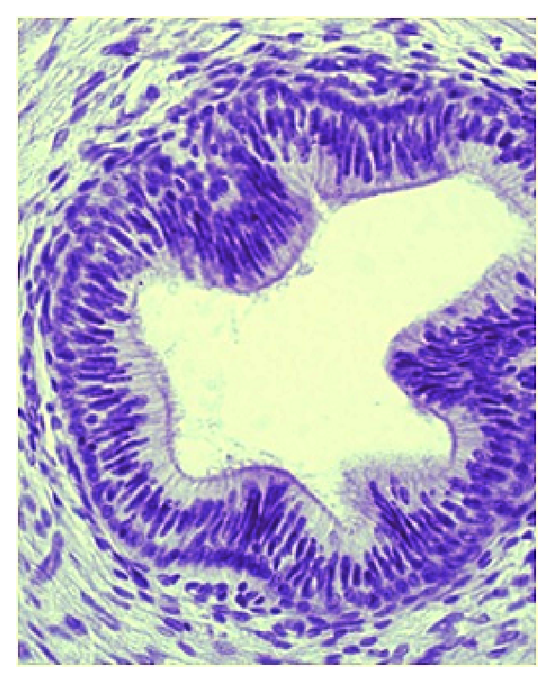

113 年第 1 次醫師醫學（一）（包括生物化學、解剖學、胚胎及發育生物學、組織學、生理學等科目知識及其臨床之應用）試題與答案
這一頁是民國 113 年第 1 次醫師醫學（一）（包括生物化學、解剖學、胚胎及發育生物學、組織學、生理學等科目知識及其臨床之應用）的整份歷屆試題，共 100 題，題目與標準答案出自考選部「國家考試試題及測驗式試題答案」開放資料，其中 100 題附有詳解。以下逐題列出題幹、選項與答案；要計時作答或記錄成績，請用線上練習。
考選部原始場次代碼：113020
線上作答這一科 →
全部 100 題
第 1 題
角膜（cornea）受到刺激會引發角膜反射（corneal reflex），下列何者是主要參與的神經核？
- （A）三叉神經脊髓核（spinal trigeminal nucleus）與動眼神經核（oculomotor nucleus）
- （B）三叉神經脊髓核（spinal trigeminal nucleus）與顏面運動神經核（facial motor nucleus）
- （C）E-W神經核（Edinger-Westphal nucleus）與顏面運動神經核（facial motor nucleus）
- （D）E-W神經核（Edinger-Westphal nucleus）與動眼神經核（oculomotor nucleus）
答案：（B）
詳解與考點
正解：角膜反射的傳入與傳出弧。角膜受刺激後，感覺傳入主要經三叉神經眼支至三叉神經脊髓核（spinal trigeminal nucleus），再投射至顏面運動神經核（facial motor nucleus）；顏面神經驅動眼輪匝肌閉眼，故選 B。
A：動眼神經核（oculomotor nucleus）支配多數眼外肌，並不負責角膜反射的眼輪匝肌閉眼傳出支。
C：E-W 神經核參與瞳孔對光反射的副交感傳出，雖同為眼部反射，卻不是角膜反射的主要中繼核。
D：E-W 神經核與動眼神經核共同對應瞳孔與眼球運動功能，缺少角膜反射所需的三叉感覺傳入與顏面運動傳出。
本題考點：角膜反射（corneal reflex）傳入主要經三叉神經（trigeminal nerve）至三叉神經脊髓核（spinal trigeminal nucleus）；傳出經顏面神經（facial nerve）使眼輪匝肌（orbicularis oculi muscle）收縮。
第 2 題
下列何者主要位於大腦半球的內側面，其周圍是初級視覺皮質（primary visual cortex）？
- （A）中央溝（central sulcus）
- （B）側腦溝（lateral sulcus）
- （C）距狀溝（calcarine sulcus）
- （D）頂枕溝（parieto-occipital sulcus）
答案：（C）
詳解與考點
正解：初級視覺皮質位於大腦半球內側面何處周圍。初級視覺皮質位在枕葉內側面的距狀溝（calcarine sulcus）上下唇，因此正解為 C。
A：中央溝位於額葉與頂葉交界，兩側分別鄰接初級運動皮質與初級體感覺皮質，非初級視覺皮質的地標。
B：側腦溝分隔顳葉與額、頂葉，深部與島葉相關，並不位於枕葉內側的視覺皮質周圍。
D：頂枕溝位於大腦內側面，為頂葉與枕葉的分界；它看似與枕葉有關，但初級視覺皮質實際圍繞的是（C）距狀溝。
本題考點：初級視覺皮質（primary visual cortex）位於枕葉（occipital lobe）內側面的距狀溝（calcarine sulcus）周圍；中央溝（central sulcus）則是運動與體感覺皮質的重要界線。
第 3 題
基底核（basal ganglia）傳出的神經纖維經丘腦（thalamus）後，一般不直接傳至下列何處之大腦皮質？
- （A）主要運動區（primary motor area）
- （B）扣帶運動區（cingulate motor area）
- （C）運動輔助區（supplementary motor area）
- （D）運動前區（premotor area）
本題送分，無標準答案
詳解與考點
本題官方公告送分。
第 4 題
下視丘（hypothalamus）的那兩個神經核，其神經纖維進到腦下腺後葉（posterior lobe of pituitarygland）釋放激素？
- （A）室旁核（paraventricular nucleus）與視上核（supraoptic nucleus）
- （B）視叉上核（suprachiasmatic nucleus）與視上核（supraoptic nucleus）
- （C）室旁核（paraventricular nucleus）與視叉上核（suprachiasmatic nucleus）
- （D）視叉上核（suprachiasmatic nucleus）與後側核（posterior nucleus）
答案：（A）
詳解與考點
正解：神經分泌細胞的軸突直接進入腦下腺後葉。下視丘的室旁核（paraventricular nucleus）與視上核（supraoptic nucleus）神經元，其軸突經下視丘－腦下腺束到達後葉，於此釋放 oxytocin 與 vasopressin，故選 A。
B：視叉上核（suprachiasmatic nucleus）是日夜節律的主要中樞，並非向腦下腺後葉釋放激素的主要神經核。
C：室旁核正確，但搭配的視叉上核功能錯置；後葉釋放激素的另一主要來源是（A）視上核。
D：視叉上核與後側核都不是腦下腺後葉荷爾蒙釋放的主要核團，故不符神經內分泌路徑。
本題考點：腦下腺後葉（posterior lobe of pituitary gland）儲存並釋放下視丘合成的 oxytocin 與 vasopressin；主要來源為室旁核（paraventricular nucleus）與視上核（supraoptic nucleus）。
第 5 題
下列關於脊髓灰質的敘述何者最不恰當？
- （A）膠狀質（substantia gelatinosa）位於背角處，與痛覺的傳遞有關
- （B）背核（nucleus dorsalis of Clarke）位於背角處，與小腦脊髓路徑有關
- （C）大型運動神經元（large motor neuron）位於前角處，支配骨骼肌
- （D）交感神經節前神經元（preganglionic sympathetic neuron）的細胞體位於中間帶
答案：（B）
詳解與考點
正解：各灰質核團的正確層次位置。背核（nucleus dorsalis of Clarke）與後脊髓小腦路（posterior spinocerebellar tract）確有關，但其細胞群位於脊髓中間帶的第 VII 層，而非背角，故最不恰當者為 B。
A：膠狀質（substantia gelatinosa）在背角淺層，參與痛覺等傷害性訊息的調節與傳遞，敘述正確。
C：大型運動神經元位於前角，軸突經前根離開脊髓並支配骨骼肌，是正確的體運動路徑。
D：交感神經節前神經元的細胞體位於胸腰段脊髓的中間帶，形成側角相關區域，敘述正確。
本題考點：脊髓灰質（spinal cord gray matter）中，背角處理感覺、前角含下運動神經元；背核（nucleus dorsalis of Clarke）位於中間帶（intermediate zone），是後脊髓小腦路（posterior spinocerebellar tract）的中繼。
第 6 題
鼓膜（tympanic membrane）的體感覺由下列那些神經支配？①三叉神經（trigeminal nerve） ②顏面神經（facial nerve） ③前庭耳蝸神經（vestibulocochlear nerve） ④舌咽神經（glossopharyngealnerve） ⑤迷走神經（vagus nerve）
- （A）①②③
- （B）①②③④
- （C）②③④⑤
- （D）①②④⑤
答案：（D）
詳解與考點
正解：鼓膜具有來自多條腦神經的體感覺支配。鼓膜外側面與周邊的感覺涉及三叉神經、顏面神經與迷走神經，內側面則有舌咽神經相關支配；前庭耳蝸神經專司聽覺與平衡，不供應鼓膜的一般體感覺。因此正確組合為①②④⑤，選 D。
A：此組合含①②但缺少④舌咽神經與⑤迷走神經，且錯把③前庭耳蝸神經列入，組合不完整又有錯誤成分。
B：此組合雖包括①②④，但把不負責鼓膜體感覺的③前庭耳蝸神經納入，並漏掉⑤迷走神經，故不正確。
C：此組合同樣錯列③前庭耳蝸神經，且缺少①三叉神經；前庭耳蝸神經與耳部構造密切相關，容易成為看似合理的誘答，但其功能不是一般體感覺。
本題考點：鼓膜（tympanic membrane）的體感覺支配來自三叉神經（trigeminal nerve）、顏面神經（facial nerve）、舌咽神經（glossopharyngeal nerve）與迷走神經（vagus nerve）；前庭耳蝸神經（vestibulocochlear nerve）負責特殊感覺而非鼓膜體感覺。
第 7 題
下列有關鎖骨上神經（supraclavicular nerve）之描述，何者正確？
- （A）源於臂神經叢
- （B）支配喉部前方表淺皮膚
- （C）支配肩膀之皮膚
- （D）支配頸闊肌（platysma muscle）之收縮
答案：（C）
詳解與考點
正解：鎖骨上神經的來源與皮膚分布。鎖骨上神經（supraclavicular nerve）來自頸神經叢的淺支，向下供應鎖骨附近、上胸部與肩部皮膚感覺，故「支配肩膀之皮膚」正確，選 C。
A：鎖骨上神經源自頸神經叢（cervical plexus），不是臂神經叢（brachial plexus）；兩者都與肩帶區域相鄰，容易因分布位置相近而混淆。
B：喉部前方表淺皮膚主要與頸橫神經的分布相關，不能以鎖骨上神經概括。
D：鎖骨上神經是皮神經，沒有支配頸闊肌收縮的運動功能；頸闊肌由顏面神經支配。
本題考點：鎖骨上神經（supraclavicular nerve）為頸神經叢（cervical plexus）淺支，供應肩部與鎖骨附近皮膚感覺；頸闊肌（platysma muscle）為顏面神經（facial nerve）的運動支配。
第 8 題
有關頭皮（scalp），下列敘述何者錯誤？
- （A）頭頂的頭皮內沒有淋巴結（lymph node）
- （B）支配頭皮的動脈走於顱頂腱膜層（epicranial aponeurosis）與顱骨膜層（pericranium）間
- （C）頭皮容許一個程度的自由移動（free movement）
- （D）枕小神經（lesser occipital nerve）參與耳後部分頭皮感覺訊息傳送
答案：（B）
詳解與考點
正解：頭皮五層中血管實際行走的平面。頭皮動脈主要位於緻密結締組織層（dense connective tissue layer），而顱頂腱膜與顱骨膜之間是疏鬆結締組織層（loose areolar tissue），故 B 把血管層次放錯；題目問錯誤敘述，選 B。
A：頭皮的淋巴引流主要至耳前、耳後、枕部與頸部淋巴結，頭頂本身沒有獨立的頭皮淋巴結，敘述可成立。
C：頭皮藉由疏鬆結締組織層可相對顱骨膜活動，故容許一定程度的自由移動，敘述正確。
D：枕小神經（lesser occipital nerve）供應耳後與外側枕部的頭皮感覺，敘述正確。
本題考點：頭皮（scalp）由皮膚、緻密結締組織、顱頂腱膜、疏鬆結締組織與顱骨膜構成；血管位於緻密結締組織層（dense connective tissue layer），疏鬆層（loose areolar tissue）則使頭皮可活動。
第 9 題
下列何者不由篩骨（ethmoid）組成？
- （A）上鼻甲（superior nasal concha）
- （B）中鼻甲（middle nasal concha）
- （C）下鼻甲（inferior nasal concha）
- （D）鼻中隔（nasal septum）
答案：（C）
詳解與考點
正解：三個鼻甲的骨性來源。上鼻甲與中鼻甲都是篩骨（ethmoid）的構成部分；下鼻甲則是一塊獨立的下鼻甲骨（inferior nasal concha），不由篩骨組成，故選 C。
A：上鼻甲是篩骨迷路的一部分，由篩骨構成，故不是答案。
B：中鼻甲同樣是篩骨的一部分，與上鼻甲並列為篩骨衍生構造，敘述不符題意。
D：鼻中隔由多個部分共同構成，其中上部的垂直板（perpendicular plate）來自篩骨；選項未說鼻中隔完全由篩骨構成，故不能據此列為不由篩骨組成者。
本題考點：篩骨（ethmoid）形成上鼻甲（superior nasal concha）、中鼻甲（middle nasal concha）及鼻中隔的垂直板（perpendicular plate）；下鼻甲（inferior nasal concha）是獨立骨。
第 10 題
下列何者位於後顱窩（posterior cranial fossa）？
- （A）盲孔（foramen cecum）
- （B）弓狀隆起（arcuate eminence）
- （C）乙狀竇溝（groove for sigmoid sinus）
- （D）後床突（posterior clinoid process）
答案：（C）
詳解與考點
正解：後顱窩內面可見的骨性標誌。乙狀竇溝（groove for sigmoid sinus）位於後顱窩，容納乙狀竇走行並通向頸靜脈孔附近，故選 C。
A：盲孔（foramen cecum）位於前顱窩，靠近額骨與篩骨交界，不在後顱窩。
B：弓狀隆起（arcuate eminence）在顳骨岩部上面，屬中顱窩的地標，並非後顱窩。
D：後床突（posterior clinoid process）位於蝶鞍後方，屬中顱窩區域；名稱有「後」字容易誤導為後顱窩，但其實是相對於蝶鞍的位置。
本題考點：後顱窩（posterior cranial fossa）可見乙狀竇溝（groove for sigmoid sinus）；前顱窩包含盲孔（foramen cecum），中顱窩則有弓狀隆起（arcuate eminence）與後床突（posterior clinoid process）。
第 11 題
下列何者的收縮，是由第七對腦神經（CN VII）支配？
- （A）嚼肌（masseter muscle）
- （B）內翼肌（medial pterygoid muscle）
- （C）鐙骨肌（stapedius muscle）
- （D）鼓膜張肌（tensor tympani muscle）
答案：（C）
詳解與考點
正解：中耳肌肉的顱神經運動支配。鐙骨肌（stapedius muscle）由顏面神經（CN VII）的鐙骨肌神經支配，收縮可限制鐙骨振動，因此選 C。
A：嚼肌由三叉神經下頷支（CN V3）支配，是咀嚼肌群，非顏面神經支配。
B：內翼肌同屬咀嚼肌，亦由 CN V3 的運動纖維支配，故不是答案。
D：鼓膜張肌（tensor tympani muscle）雖也位於中耳，卻由 CN V3 的分支支配；它與（C）鐙骨肌同在中耳，正是最易混淆之處。
本題考點：顏面神經（facial nerve, CN VII）支配鐙骨肌（stapedius muscle）；三叉神經下頷支（mandibular division of trigeminal nerve, CN V3）支配嚼肌、內翼肌與鼓膜張肌（tensor tympani muscle）。
第 12 題
下列何者是防止顳頷關節（temporomandibular joint）向後方脫臼最重要的構造？
- （A）顳頷韌帶（temporomandibular ligament）
- （B）內翼肌（medial pterygoid muscle）
- （C）莖突下頷韌帶（stylomandibular ligament）
- （D）外翼肌（lateral pterygoid muscle）
答案：（A）
詳解與考點
正解：限制顳頷關節向後位移的最重要構造。顳頷韌帶（temporomandibular ligament）強化關節囊外側，能限制下頷骨髁突向後移位，避免向後脫臼及壓迫耳部構造，故選 A。
B：內翼肌主要參與下頷提升與側向運動，是肌肉而非防止向後脫臼的主要韌帶性限制。
C：莖突下頷韌帶（stylomandibular ligament）可限制下頷過度前移與張口，但不是防止向後脫臼的最重要構造。
D：外翼肌主要使髁突與關節盤向前移動，參與張口和前突；它看似能以主動拉力影響關節位置，但題目問的是最關鍵的被動防護構造。
本題考點：顳頷關節（temporomandibular joint）由關節囊及顳頷韌帶（temporomandibular ligament）穩定；顳頷韌帶尤其限制下頷骨髁突（mandibular condyle）的過度向後位移。
第 13 題
頭部外側近翼點（pterion）處受到撞擊，數小時後發生硬腦膜外血腫，最可能是下列那一血管破裂？
- （A）硬腦膜靜脈竇（dural sinus）
- （B）腦膜中動脈（middle meningeal artery）
- （C）前大腦動脈（anterior cerebral artery）
- （D）後大腦動脈（posterior cerebral artery）
答案：（B）
詳解與考點
正解：翼點外傷後經數小時出現硬腦膜外血腫。翼點（pterion）骨質薄弱，其深面有腦膜中動脈（middle meningeal artery）分支通過；動脈破裂可先有短暫清醒期，之後血腫擴大壓迫腦組織，故選 B。
A：硬腦膜靜脈竇受傷較常造成靜脈性出血，並非翼點骨折導致典型硬腦膜外血腫的主要血管。
C：前大腦動脈位於顱內較深處，與翼點附近硬腦膜外動脈走行不符。
D：後大腦動脈在顱底後部循行，受翼點撞擊而破裂的機轉不合理，故非答案。
本題考點：翼點（pterion）是額骨、頂骨、顳骨與蝶骨交會的薄弱區；其深面腦膜中動脈（middle meningeal artery）破裂是硬腦膜外血腫（epidural hematoma）的典型原因。
第 14 題
下列何者負責傳遞靠近肋骨處之壁層胸膜（costal part of parietal pleura）的感覺訊號？
- （A）肋間神經（intercostal nerve）
- （B）迷走神經（vagus nerve）
- （C）交感神經幹（sympathetic trunk）
- （D）膈神經（phrenic nerve）
答案：（A）
詳解與考點
正解：「靠近肋骨處」的壁層胸膜；肋胸膜的體感覺與肋間隙同源，由肋間神經傳遞，故選 A。這也解釋了肋胸膜受刺激時疼痛定位通常清楚。
B：迷走神經主要提供胸腹腔臟器的副交感與部分內臟感覺纖維，並不負責肋胸膜的軀體感覺。
C：交感神經幹含自主神經纖維，並非肋胸膜痛覺的周邊傳入神經。
D：膈神經支配較中央的膈胸膜與縱膈胸膜，疼痛可轉介至肩部；它看似也支配壁層胸膜，但題目指定靠肋骨的肋胸膜，故不符。
本題考點：壁層胸膜感覺（parietal pleura innervation）——肋胸膜由肋間神經支配；膈胸膜與縱膈胸膜的中央區主要由膈神經（phrenic nerve）支配。
第 15 題
下列何者供應心臟房室結（atrioventricular node）的血液？
- （A）前室間動脈（left anterior descending artery）
- （B）左邊緣動脈（left marginal artery）
- （C）右冠狀動脈（right coronary artery）
- （D）左冠狀動脈（left coronary artery）
答案：（C）
詳解與考點
正解：房室結的冠狀動脈供血。多數人的房室結動脈源自右冠狀動脈，故選 C；這是常見的右冠優勢循環型態。
A：前室間動脈是左冠狀動脈的分支，主要供應前壁與室間隔前部，並非房室結最常見的供血來源。
B：左邊緣動脈主要沿心臟左緣供應左心室外側壁，與房室結位置不相符。
D：左冠狀動脈可在左冠優勢者經迴旋支供應房室結，但此非最常見的來源；它看似合理是因冠狀優勢存在變異，題目問典型供應則選（C）右冠狀動脈。
本題考點：心臟傳導系統血供（blood supply of cardiac conduction system）——竇房結與房室結的供血有冠狀優勢變異，但房室結多由右冠狀動脈供應。
第 16 題
有關支氣管動脈（bronchial artery）敘述，下列何者錯誤？
- （A）通常主幹是由左側第二肋間動脈分出
- （B）供應血液給部分的肺臟組織及支氣管本身
- （C）供應血液給部分的食道組織
- （D）供應血液給部分的胸膜（pleura）
答案：（A）
詳解與考點
正解：本題問錯誤敘述。典型兩支左支氣管動脈多直接起自胸主動脈，右支常由右側後肋間動脈的肋間支氣管幹起源；並非通常由左側第二肋間動脈分出，故錯誤的是 A。
B：支氣管動脈提供支氣管、肺門結構及部分肺組織的營養性循環，敘述正確，故不是答案。
C：支氣管動脈的小分支可供應部分食道，與食道支等在後縱膈的血管分布相連，敘述正確。
D：支氣管循環可供應肺門附近與臟層胸膜的部分組織，敘述正確，故非本題錯誤選項。
本題考點：支氣管循環（bronchial circulation）——支氣管動脈多來自胸主動脈，負責肺的營養性血流，並可分支至支氣管、食道及胸膜相關結構。
第 17 題
高位胸椎脊髓損傷病患，在受傷初期肺活量（vital capacity）大幅下降的主要原因為：
- （A）橫膈肌肉癱瘓
- （B）肋間肌肉癱瘓
- （C）頸部肌肉癱瘓
- （D）腹部肌肉癱瘓
答案：（B）
詳解與考點
正解：高位胸椎脊髓損傷會中斷胸段肋間神經對肋間肌的驅動，使胸廓擴張能力下降，受傷初期肺活量因而大幅減少，故選 B。
A：橫膈肌主要由頸髓 C3–C5 的膈神經支配；單純高位胸椎損傷通常保留其主要功能，故不是主因。
C：頸部肌肉不屬於產生主要肺活量的呼吸肌群，且高位胸椎病灶不直接造成其癱瘓。
D：腹肌癱瘓會削弱用力呼氣與咳嗽，但初期肺活量大幅下降的關鍵是吸氣時肋間肌與胸廓運動受損，而非腹肌。
本題考點：脊髓損傷呼吸生理（respiratory consequences of spinal cord injury）——頸髓以上損傷可危及橫膈；胸髓損傷主要削弱肋間肌與腹肌，降低胸廓運動及咳嗽效率。
第 18 題
主胰管（main pancreatic duct）及膽管（bile duct）會共同開口於何處？
- （A）十二指腸上段（superior part of duodenum）
- （B）十二指腸下降段（descending part of duodenum）
- （C）十二指腸水平段（horizontal part of duodenum）
- （D）十二指腸上升段（ascending part of duodenum）
答案：（B）
詳解與考點
正解：主胰管與膽管會合形成肝胰壺腹，開口於十二指腸大乳頭；大乳頭位於十二指腸下降段，故選 B。
A：十二指腸上段接近幽門，並非肝胰壺腹的正常開口處。
C：十二指腸水平段橫越脊柱前方，位置已遠離大乳頭所在的下降段。
D：十二指腸上升段接近十二指腸空腸曲，亦非膽胰管共同開口處。
本題考點：膽胰管解剖（biliary and pancreatic duct anatomy）——主胰管與總膽管通常在肝胰壺腹（hepatopancreatic ampulla）會合，經十二指腸下降段的大乳頭開口。
第 19 題
腹股溝深環（deep inguinal ring）位於下列何結構？
- （A）腹橫筋膜（transversalis fascia）
- （B）腹內斜肌（internal oblique muscle）
- （C）腹外斜肌腱膜（aponeurosis of external oblique muscle）
- （D）腹橫肌腱膜（aponeurosis of transversus abdominis）
答案：（A）
詳解與考點
正解：腹股溝深環是腹橫筋膜上的開口，精索或子宮圓韌帶由此進入腹股溝管，故選 A。
B：腹內斜肌形成腹股溝管部分頂壁與精索覆蓋，但深環不是開在此肌肉上。
C：腹外斜肌腱膜形成腹股溝淺環；深環與淺環容易混淆，但二者分別位於腹橫筋膜與腹外斜肌腱膜。
D：腹橫肌參與腹壁與腹股溝管頂壁，並無「腹橫肌腱膜」作為深環所在的結構。
本題考點：腹股溝管（inguinal canal）——深環（deep inguinal ring）位於腹橫筋膜；淺環（superficial inguinal ring）位於腹外斜肌腱膜。
第 20 題
下列何者是上腸繫膜動脈（superior mesenteric artery）的分支？
- （A）前上胰十二指腸動脈（anterior superior pancreaticoduodenal artery）
- （B）後上胰十二指腸動脈（posterior superior pancreaticoduodenal artery）
- （C）左結腸動脈（left colic artery）
- （D）下胰十二指腸動脈（inferior pancreaticoduodenal artery）
答案：（D）
詳解與考點
正解：上腸繫膜動脈的近端分支包括下胰十二指腸動脈，供應胰頭及十二指腸遠端部分，故選 D。
A、B：前上與後上胰十二指腸動脈都源自胃十二指腸動脈，屬腹腔幹系統而非上腸繫膜動脈分支；它們雖與（D）共同形成胰十二指腸吻合，來源不同是誘答關鍵。
C：左結腸動脈是下腸繫膜動脈的分支，主要供應降結腸，不屬上腸繫膜動脈。
本題考點：腸繫膜動脈分支（mesenteric arterial branches）——上腸繫膜動脈發出下胰十二指腸、空腸、迴腸、迴結腸、右結腸及中結腸動脈；上胰十二指腸動脈來自腹腔幹系統。
第 21 題
闌尾的疼痛主要由下列何者傳導？
- （A）內臟大神經（greater splanchnic nerve）
- （B）內臟小神經（lesser splanchnic nerve）
- （C）內臟最小神經（least splanchnic nerve）
- （D）迷走神經（vagus nerve）
答案：（B）
詳解與考點
正解：闌尾屬中腸，其內臟痛覺傳入纖維隨交感神經回行至 T10 附近節段，主要經內臟小神經傳導，故選 B；這也造成早期疼痛常感於臍周。
A：內臟大神經主要承載較高胸段的交感節前與傳入纖維，較符合前腸相關臟器，不是闌尾的典型傳導路徑。
C：內臟最小神經多與較低胸段及腎叢相關，非中腸闌尾痛覺的主要途徑。
D：迷走神經對腸道有副交感支配，但不承載闌尾疼痛的主要內臟傳入纖維；它看似通往腸道，卻不是本題的痛覺傳導答案。
本題考點：內臟痛覺（visceral pain）——中腸構造的痛覺多隨交感神經回傳至 T10 節段，闌尾炎早期可出現臍周轉移痛。
第 22 題
下列何者不參與形成坐骨肛門窩（ischioanal fossa）的邊界（boundary）？
- （A）閉孔外肌（obturator externus）
- （B）坐骨粗隆（ischial tuberosity）
- （C）臀大肌（gluteus maximus）
- （D）薦骨粗隆韌帶（sacrotuberous ligament）
答案：（A）
詳解與考點
正解：坐骨肛門窩的外側壁由閉孔內肌及其筋膜形成，不是閉孔外肌；因此不參與其邊界的是 A。
B：坐骨粗隆位於坐骨肛門窩的外下方，為其重要的骨性界標，故參與邊界。
C：臀大肌位於窩的後方，構成後側相關邊界，敘述並非錯誤。
D：薦骨粗隆韌帶位於後方，與後側邊界及陰部管附近的解剖關係密切，故參與邊界。
本題考點：坐骨肛門窩（ischioanal fossa）——外側壁是閉孔內肌（obturator internus）與其筋膜；閉孔外肌位於閉孔膜外側，不形成此窩邊界。
第 23 題
關於陰部內動脈（internal pudendal artery），下列敘述何者最不恰當？
- （A）陰部內動脈是髂內動脈（internal iliac artery）的分支
- （B）陰部內動脈藉由坐骨大孔（greater sciatic foramen）離開骨盆腔
- （C）陰部內動脈通過坐骨小孔（lesser sciatic foramen）進入坐骨肛門窩（ischioanal fossa）
- （D）中直腸動脈（middle rectal artery）是陰部內動脈的分支
答案：（D）
詳解與考點
正解：本題問最不恰當者。中直腸動脈通常是髂內動脈前支的分支，並非陰部內動脈的分支，故選 D。
A：陰部內動脈起自髂內動脈前支，敘述正確，故非答案。
B：陰部內動脈經坐骨大孔離開骨盆腔，繞過坐骨棘附近，敘述正確。
C：它再經坐骨小孔進入會陰並走入坐骨肛門窩外側壁的陰部管，敘述正確；這段「先大孔出、再小孔入」是重要走行。
本題考點：陰部內動脈（internal pudendal artery）——起自髂內動脈，經坐骨大孔離開骨盆後再穿坐骨小孔進入會陰；中直腸動脈屬髂內動脈分支。
第 24 題
關於輸精管（ductus deferens），下列敘述何者正確？
- （A）跨過髂外動脈及靜脈（external iliac vessels），並延伸進入骨盆腔
- （B）不被腹膜（peritoneum）覆蓋
- （C）通過骨盆腔時，會穿過輸尿管（ureter）下方
- （D）輸精管壺腹（ampulla of ductus deferens）位於輸精管與副睪管（duct of epididymis）交接處
答案：（A）
詳解與考點
正解：輸精管由腹股溝深環進入骨盆時會跨過髂外血管，故選 A。
B：輸精管在骨盆腔內有部分表面受腹膜覆蓋，不能一概說不被腹膜覆蓋。
C：輸精管在膀胱後方跨過輸尿管的上方，形成「輸尿管在下」的關係；選項寫成輸精管穿過輸尿管下方，方向顛倒。
D：輸精管壺腹位於輸精管末端、接近精囊並與其管合成射精管，不在輸精管與副睪管交接處；後者位於較近端。
本題考點：輸精管走行（course of ductus deferens）——輸精管跨髂外血管進入骨盆，於膀胱後方越過輸尿管上方，末端膨大為壺腹並接精囊管。
第 25 題
下列四者中，何者之淋巴回流途徑與其他三者不同？
- （A）陰囊（scrotum）
- （B）陰道前庭（vestibule of vagina）
- （C）卵巢（ovary）
- （D）大前庭腺（greater vestibular gland）
答案：（C）
詳解與考點
正解：淋巴回流「與其他三者不同」。卵巢源自後腹壁附近的生殖嵴，其淋巴沿卵巢血管回流至腰旁淋巴結；其餘三者主要回流至淺腹股溝淋巴結，故選 C。
A、B、D：陰囊、陰道前庭與大前庭腺皆屬會陰外部或淺層構造，淋巴主要至淺腹股溝淋巴結，三者同因而非答案。
本題考點：女性生殖器淋巴引流（lymphatic drainage of female genitalia）——卵巢淋巴隨卵巢血管至腰旁淋巴結；外陰與會陰構造多引流至淺腹股溝淋巴結。
第 26 題
下列何構造會與肱骨小頭（capitulum of humerus）接觸，形成關節？
- （A）尺骨頭（head of ulna）
- （B）橈骨頭（head of radius）
- （C）尺骨滑車切迹（trochlear notch of ulna）
- （D）肩胛骨關節盂（glenoid cavity of scapula）
答案：（B）
詳解與考點
正解：肱骨小頭位於肱骨遠端外側，與橈骨頭關節面相接形成肱橈關節，故選 B。
A：尺骨頭位於遠端、靠近腕關節，並不接觸肱骨小頭。
C：尺骨滑車切迹與肱骨滑車相接，名稱相近而容易誤選；肱骨小頭的對應關節面則是橈骨頭。
D：肩胛骨關節盂與肱骨頭形成肩關節，位於肱骨近端，非肱骨小頭的關節面。
本題考點：肘關節（elbow joint）——肱骨滑車對尺骨滑車切迹；肱骨小頭（capitulum）對橈骨頭（head of radius）。
第 27 題
足背大 趾外側與第二趾內側間皮膚感覺異常，最可能是下列何神經受損？
- （A）深腓神經（deep fibular nerve）
- （B）淺腓神經（superficial fibular nerve）
- （C）隱神經（saphenous nerve）
- （D）內蹠神經（medial plantar nerve）
答案：（A）
詳解與考點
正解：足背第一趾間隙，也就是大趾外側與第二趾內側的狹小皮膚區，是深腓神經的特有感覺分布，故選 A。
B：淺腓神經支配足背大部分皮膚，但通常保留第一趾間隙，因此看似最接近卻不符題目指定區域。
C：隱神經主要支配小腿內側、足內側緣近端，不支配第一趾間隙。
D：內蹠神經在足底支配內側足底及趾部感覺，並非足背第一趾間隙。
本題考點：腓神經感覺分布（fibular nerve sensory distribution）——深腓神經（deep fibular nerve）供應第一趾間隙；淺腓神經供應其餘多數足背皮膚。
第 28 題
下列有關枕下三角（suboccipital triangle）的敘述，何者正確？
- （A）上外側邊界是頭後大直肌（rectus capitis posterior major）
- （B）上內側邊界是頭上斜肌（obliquus capitis superior）
- （C）枕大神經（greater occipital nerve）從此三角的下緣穿出
- （D）枕動脈（occipital artery）位於其內
答案：（C）
詳解與考點
正解：枕大神經是 C2 背支，從枕下三角的下緣穿出後上行至頭皮，故選 C。
A：頭後大直肌形成枕下三角的上內側邊界，不是上外側邊界。
B：頭上斜肌形成上外側邊界，不是上內側邊界；（A）與（B）皆將兩條邊界對調。
D：枕下三角內的重要內容物為椎動脈與枕下神經，枕動脈並非其內容物。
本題考點：枕下三角（suboccipital triangle）——由頭後大直肌、頭上斜肌與頭下斜肌圍成；內含椎動脈（vertebral artery）與枕下神經，枕大神經從其下緣通過。
第 29 題
後骨間神經（posterior interosseous nerve）是那一條神經的分支？
- （A）尺神經（ulnar nerve）
- （B）橈神經（radial nerve）
- （C）正中神經（median nerve）
- （D）肌皮神經（musculocutaneous nerve）
答案：（B）
詳解與考點
正解：後骨間神經是橈神經深支穿過旋後肌後的延續，主要支配前臂後群伸肌，故選 B。
A：尺神經行於前臂內側並經 Guyon 管進手，並不形成後骨間神經。
C：正中神經主要支配前臂屈肌群及手部部分肌肉，沒有後骨間神經分支。
D：肌皮神經支配前臂前群後成為前臂外側皮神經，走行與後骨間神經不同。
本題考點：橈神經分支（radial nerve branches）——橈神經深支進入旋後肌後成為後骨間神經（posterior interosseous nerve），主司前臂伸肌的運動支配。
第 30 題
為進行髖關節手術，結紮了大腿上部所有形成十字吻合（cruciate anastomosis）的動脈，下列何者最不受影響？
- （A）內側迴旋股動脈（medial femoral circumflex artery）
- （B）外側迴旋股動脈（lateral femoral circumflex artery）
- （C）上臀動脈（superior gluteal artery）
- （D）下臀動脈（inferior gluteal artery）
答案：（C）
詳解與考點
正解：十字吻合由下臀動脈、內側與外側迴旋股動脈的橫支及第一穿通動脈等構成；上臀動脈不參與，故在結紮所有形成十字吻合的動脈時最不受影響的是 C。
A、B：內側與外側迴旋股動脈皆提供十字吻合的成分，會受結紮直接影響。
D：下臀動脈是十字吻合的重要上方來源，亦會受影響。
本題考點：髖部動脈吻合（hip arterial anastomoses）——十字吻合（cruciate anastomosis）連結髂內與股動脈系統；上臀動脈主要參與轉子吻合而非十字吻合。
第 31 題
踝關節（ankle joint）由下列那三塊骨頭共同構成？
- （A）股骨（femur）、脛骨（tibia）與腓骨（fibula）
- （B）脛骨（tibia）、腓骨（fibula）與跟骨（calcaneus）
- （C）脛骨（tibia）、腓骨（fibula）與距骨（talus）
- （D）脛骨（tibia）、距骨（talus）與跟骨（calcaneus）
答案：（C）
詳解與考點
正解：踝關節即距小腿關節，由脛骨與腓骨構成的踝穴包覆距骨滑車，故共同構成的三骨為脛骨、腓骨與距骨，選 C。
A：股骨參與膝關節與髖關節，不參與踝關節。
B：跟骨與距骨形成距下關節，而非踝關節本身；此選項漏掉了距骨。
D：脛骨與距骨雖參與踝關節，但跟骨不直接構成踝關節，且漏掉腓骨。
本題考點：踝關節（ankle joint）——距小腿關節（talocrural joint）由脛骨、腓骨與距骨構成；距骨與跟骨則構成距下關節（subtalar joint）。
第 32 題
胚胎的胚內體腔（intraembryonic coelom），最早出現在下列何者？
- （A）軸旁中胚層（paraxial mesoderm）
- （B）中間中胚層（intermediate mesoderm）
- （C）外側中胚層（lateral mesoderm）
- （D）內胚層（endoderm）
答案：（C）
詳解與考點
正解：胚內體腔最早在外側中胚層內形成裂隙，之後將外側中胚層分為體壁層與臟壁層，故選 C。
A：軸旁中胚層主要形成體節，進一步衍生骨骼、骨骼肌與真皮，非胚內體腔起源。
B：中間中胚層主要發育為泌尿生殖系統，不是最早出現胚內體腔的位置。
D：內胚層主要形成消化與呼吸道上皮等，並不裂開形成體腔。
本題考點：胚內體腔（intraembryonic coelom）——起自外側中胚層（lateral mesoderm）的腔隙，後續分化為心包腔、胸膜腔與腹膜腔。
第 33 題
衍生自第二咽弓（second pharyngeal arch）的肌肉，是由下列那一條腦神經支配？
- （A）三叉神經（trigeminal nerve）
- （B）顏面神經（facial nerve）
- （C）舌咽神經（glossopharyngeal nerve）
- （D）副神經（accessory nerve）
答案：（B）
詳解與考點
正解：第二咽弓衍生的肌肉為顏面表情肌、鐙骨肌、莖突舌骨肌及二腹肌後腹，均由顏面神經支配，故選 B。
A：三叉神經主要支配第一咽弓衍生的咀嚼肌等，不是第二咽弓。
C：舌咽神經支配第三咽弓衍生的莖突咽肌，咽弓與神經配對不同。
D：副神經主要支配胸鎖乳突肌與斜方肌，並非第二咽弓肌肉的神經。
本題考點：咽弓與腦神經（pharyngeal arches and cranial nerves）——第一咽弓對三叉神經、第二咽弓對顏面神經、第三咽弓對舌咽神經；此配對用於判讀頭頸肌肉的胚胎來源。
第 34 題
下列關於十二指腸（duodenum）發育的敘述，何者最適當？
- （A）由前腸（foregut）與後腸（hindgut）共同發育而來
- （B）血液供應有上腸繫膜動脈（superior mesenteric artery）與下腸繫膜動脈（inferior mesentericartery）
- （C）因胃（stomach）的旋轉使十二指腸旋轉至右側，並且大部分貼在後腹壁
- （D）發育過程中均呈現中空管狀的結構
答案：（C）
詳解與考點
正解：胃旋轉後十二指腸的位置變化與腹膜關係。十二指腸由前腸末端與中腸近端共同形成；隨胃旋轉，它形成 C 形袢而向右移位，第二至第四部大多與後腹壁融合，成為次發性後腹膜器官，故選 C。
A：十二指腸不是由前腸與後腸共同發育；其近端來自前腸、遠端來自中腸，後腸主要形成遠端大腸。
B：十二指腸的血供分界是腹腔幹與上腸繫膜動脈，而非上、下腸繫膜動脈。此選項看似以兩條腸繫膜動脈概括腸管血供，但下腸繫膜動脈供應的是後腸。
D：十二指腸在發育早期有上皮細胞增生造成管腔暫時阻塞、其後再通的過程，並非全程都維持中空。
本題考點：腸管胚胎發育（gut development）——十二指腸源自前腸與中腸交界；胃旋轉（gastric rotation）與後腹膜化（secondary retroperitonealization）造成其 C 形位置及固定。
第 35 題
嬰兒剛出生使用肺部呼吸時，常會伴隨一些現象的改變，下列敘述何者正確？
- （A）肺部血管阻力顯著增加
- （B）肺部血流量上升
- （C）肺動脈管壁顯著變厚
- （D）右心房壓力高於左心房
答案：（B）
詳解與考點
正解：出生後肺泡張開，肺循環阻力隨氧合上升而下降。新生兒開始肺呼吸後，肺血管擴張、肺血管阻力降低，右心輸出的血液更容易流入肺部，肺血流量因而上升，故選 B。
A：出生後肺泡充氣與氧分壓上升使肺血管阻力顯著下降，不是增加。
C：出生後肺泡擴張與氧分壓上升使肺血管舒張、阻力下降；肺動脈管壁不會因此顯著變厚，後續隨肺循環低阻化反而變薄。
D：肺血流增加使回流左心房的血量上升，左心房壓力會高於右心房，促使卵圓孔功能性關閉；此處左右心房壓差方向相反。
本題考點：胎兒至新生兒循環轉換（fetal-to-neonatal circulatory transition）——肺擴張使肺血管阻力下降、肺血流增加，並改變心房壓差與胎兒分流。
第 36 題
大腦導水管（cerebral aqueduct）是衍生自那一腦泡（brain vesicle）？
- （A）菱腦（rhombencephalon）
- （B）中腦（mesencephalon）
- （C）間腦（diencephalon）
- （D）端腦（telencephalon）
答案：（B）
詳解與考點
正解：次級腦泡的腔室衍生物。中腦（mesencephalon）發育後仍維持為中腦，其腔室變窄形成連接第三、第四腦室的大腦導水管（cerebral aqueduct），故選 B。
A：菱腦的腔室主要形成第四腦室，並非大腦導水管。
C：間腦的腔室形成第三腦室；它雖與導水管相連，但不是導水管的來源。
D：端腦的腔室形成左右側腦室，位置與導水管不同。
本題考點：腦泡發育（brain vesicle development）——中腦腔形成大腦導水管（cerebral aqueduct）；間腦與端腦分別形成第三腦室與側腦室。
第 37 題
下列有關使用福馬林（formalin）來固定生物組織的敘述，何者錯誤？
- （A）可與脂質（lipid）充分作用，保存細胞膜的完整性
- （B）可使蛋白質（protein）變性，讓組織變硬
- （C）可防止細胞的自溶作用（autolysis）
- （D）可殺死細菌、真菌、病毒等致病微生物（pathogenic microorganisms）
答案：（A）
詳解與考點
正解：題目問錯誤敘述，關鍵是福馬林的主要固定標的是蛋白質而非脂質。福馬林以甲醛造成蛋白質交聯與變性來固定組織；脂質通常不易被其充分保存，細胞膜脂質也可能在後續脫水、透明處理中流失，因此 A 錯誤，故選 A。
B：福馬林使蛋白質交聯、變性，抑制蛋白質溶解並增加組織硬度，敘述正確，故非答案。
C：固定可迅速抑制細胞內酵素活動，防止組織自溶（autolysis），敘述正確，故非答案。
D：福馬林可使多種微生物失活，亦有助防腐與降低病原污染，敘述正確，故非答案。
本題考點：組織固定（tissue fixation）——甲醛類固定劑主要透過蛋白質交聯保存組織形態；脂質保存通常需特別的固定與處理方式。
第 38 題
氣管的內襯上皮（lining epithelium of trachea）是屬於：
- （A）單層柱狀上皮（simple columnar epithelium）
- （B）複層扁平上皮（stratified squamous epithelium）
- （C）複層柱狀上皮（stratified columnar epithelium）
- （D）具纖毛的偽複層柱狀上皮（ciliated pseudostratified columnar epithelium）
答案：（D）
詳解與考點
正解：氣管的黏液纖毛清除功能。氣管內腔由具纖毛的偽複層柱狀上皮覆蓋，含纖毛細胞與杯狀細胞；細胞核高度不一造成複層外觀，但所有細胞都接觸基底膜，故選 D。
A：單層柱狀上皮較典型於胃腸道等處，不能表現氣管所需的典型纖毛呼吸道上皮構造。
B：複層扁平上皮適合耐磨，例如口腔、食道及陰道；氣管主要任務是黏液纖毛運輸，並非承受強烈摩擦。
C：複層柱狀上皮真正層數多且較少見，並不是氣管內襯的典型型態。
本題考點：呼吸道上皮（respiratory epithelium）——氣管為具纖毛的偽複層柱狀上皮（ciliated pseudostratified columnar epithelium），以黏液纖毛清除（mucociliary clearance）排除微粒。
第 39 題
下列關於軟骨（cartilage）的敘述，何者正確？
- （A）軟骨組織的附加生長（appositional growth）是直接由軟骨細胞（chondrocyte）分裂並分泌基質（matrix）而成
- （B）透明軟骨（hyaline cartilage）的基質（matrix）主要是由第一型膠原蛋白（type I collagen）構成
- （C）軟骨組織是一個沒有血管的結構（avascular structure）
- （D）軟骨組織的再生非常旺盛，受傷時可完整癒合
答案：（C）
詳解與考點
正解：軟骨的營養供應方式。軟骨基質內沒有血管，軟骨細胞須由軟骨膜血管或關節液進行擴散取得養分，因此軟骨是無血管結構（avascular structure），故選 C。
A：附加生長（appositional growth）由軟骨膜內的軟骨生成細胞分化成軟骨細胞後，從表面增加基質；既有軟骨細胞在腔隙內分裂是間質生長。
B：透明軟骨主要含第二型膠原蛋白（type II collagen），不是第一型；第一型較典型於纖維軟骨。
D：正因無血管且細胞代謝較慢，軟骨修復能力有限，受傷後往往難以完整再生。
本題考點：軟骨（cartilage）——無血管性（avascularity）決定其營養靠擴散且修復差；附加生長（appositional growth）與間質生長（interstitial growth）要區分。
第 40 題
下列有關神經組織中之衛星細胞（satellite cell）的敘述，何者正確？
- （A）圍繞中樞神經系統的神經元細胞本體
- （B）是大型的柱狀細胞
- （C）在H&E染色，為多核的細胞
- （D）不負責形成髓磷脂（myelin）
答案：（D）
詳解與考點
正解：周邊神經節的衛星細胞與許旺細胞的分工。衛星細胞（satellite cell）包圍周邊神經節內神經元的細胞本體，負責支持與維持局部微環境；形成周邊神經髓磷脂的是許旺細胞（Schwann cell），故選 D。
A：圍繞中樞神經系統神經元本體的支持細胞不是周邊神經節衛星細胞；衛星細胞位於周邊神經系統。
B：衛星細胞是扁平的小型膠細胞，並非大型柱狀細胞。
C：衛星細胞通常為單一細胞核；多核是骨骼肌纖維等構造的特徵，非其 H&E 表現。
本題考點：周邊神經膠細胞（peripheral glial cells）——衛星細胞（satellite cell）包繞神經節細胞體；許旺細胞（Schwann cell）形成周邊神經髓磷脂（myelin）。
第 41 題
關於第二型肺泡細胞（type-II pneumocyte）之敘述，下列何者正確？
- （A）在肺泡細胞中占40%，覆蓋95%的肺泡表面（alveolar air surface）
- （B）與肺泡巨噬細胞（alveolar macrophage）共同組成氣血屏障（air-blood barrier）
- （C）分泌界面活性劑（surfactant）
- （D）是很薄的扁平（squamous）細胞
答案：（C）
詳解與考點
正解：第二型肺泡細胞的分泌功能。第二型肺泡細胞（type-II pneumocyte）為較立方的細胞，具有板層小體，能分泌肺表面活性劑（surfactant）以降低肺泡表面張力、防止肺泡塌陷，故選 C。
A：覆蓋大部分肺泡表面的薄扁平細胞是第一型肺泡細胞；第二型細胞數量較多但表面覆蓋面積較小。此選項看似在描述肺泡細胞比例，卻把第一型細胞的表面覆蓋特徵混入第二型。
B：氣血屏障主要由第一型肺泡細胞、融合基底膜與毛細血管內皮構成，肺泡巨噬細胞不構成其擴散屏障。
D：很薄的扁平形態是第一型肺泡細胞的特徵；第二型細胞較為立方。
本題考點：肺泡細胞（alveolar cells）——第一型肺泡細胞構成主要氣體交換表面；第二型肺泡細胞（type-II pneumocyte）分泌界面活性劑（surfactant）並參與修復。
第 42 題
下列何種細胞具有黏原顆粒（mucinogen granules）？
- （A）胃賁門腺細胞（cardiac glandular cells）
- （B）胰腺泡細胞（pancreatic acinar cells）
- （C）耳下腺腺泡細胞（parotid acinar cells）
- （D）潘氏細胞（Paneth cells）
答案：（A）
詳解與考點
正解：腺體分泌物與分泌顆粒的對應。胃賁門腺細胞（cardiac glandular cells）分泌黏液，細胞內可見黏原顆粒（mucinogen granules），釋放後形成黏蛋白以保護胃黏膜，故選 A。
B：胰腺泡細胞主要為漿液性分泌，含酵素原顆粒（zymogen granules），用於消化酵素前驅物的分泌。
C：耳下腺腺泡細胞也是漿液性細胞，主要製造含蛋白質的唾液，並非以黏原顆粒為特徵。
D：潘氏細胞含有抗菌相關的分泌顆粒，例如溶菌酶與防禦素，功能不同於黏液分泌細胞。
本題考點：腺體分泌（glandular secretion）——黏液細胞具有黏原顆粒（mucinogen granules）；漿液性腺泡細胞常見酵素原顆粒（zymogen granules）。
第 43 題
下列何者最不可能出現在膽囊的固有層（lamina propria）？
- （A）穿孔型微血管（fenestrated capillary）
- （B）小靜脈（venule）
- （C）淋巴管（lymphatic vessel）
- （D）黏液腺（mucous gland）
本題送分，無標準答案
詳解與考點
本題官方公告送分。
第 44 題
下列何者富含血管，負責提供養分及氧氣給毛囊（hair follicle）？
- （A）真皮乳頭（dermal papilla）
- （B）玻璃膜（glassy membrane）
- （C）內根鞘（internal root sheath）
- （D）外根鞘（external root sheath）
答案：（A）
詳解與考點
正解：毛囊生長區的營養來源。真皮乳頭（dermal papilla）位在毛球底部，為富含微血管的結締組織突起，可供應鄰近毛母質細胞與毛囊生長所需的氧氣和養分，故選 A。
B：玻璃膜（glassy membrane）是毛囊外根鞘與真皮之間增厚的基底膜樣結構，並非主要血管供應處。
C：內根鞘包圍並塑形生長中的毛幹，功能是支持毛髮形成，不是供應血管。
D：外根鞘是毛囊的上皮性構成，與表皮相連；血管位於其外的結締組織而非鞘本身。
本題考點：毛囊（hair follicle）——真皮乳頭（dermal papilla）富含血管並調控毛髮生長；毛母質（hair matrix）是毛幹增生分化的區域。
第 45 題
下列何者的細胞內含有大量的脂肪小滴（lipid droplets），且可分泌糖皮質素（glucocorticoid）？
- （A）腎上腺皮質（adrenal cortex）的球小帶（zona glomerulosa）
- （B）腎上腺皮質（adrenal cortex）的束狀帶（zona fasciculata）
- （C）腎上腺皮質（adrenal cortex）的網狀帶（zona reticularis）
- （D）腎上腺髓質（adrenal medulla）
答案：（B）
詳解與考點
正解：腎上腺皮質分帶與類固醇激素的配對。束狀帶（zona fasciculata）細胞富含脂肪小滴，提供類固醇生成的膽固醇原料，並主要分泌糖皮質素（glucocorticoid），故選 B。
A：球小帶（zona glomerulosa）主要分泌鹽皮質素，尤其是 aldosterone，調節鈉鉀與體液平衡，不是糖皮質素的主產地。
C：網狀帶（zona reticularis）主要分泌腎上腺雄性素等性類固醇前驅物；三帶都能見脂質相關特徵，但激素種類是本題的決定點。
D：腎上腺髓質由嗜鉻細胞構成，分泌兒茶酚胺，並非類固醇激素。
本題考點：腎上腺皮質（adrenal cortex）分帶——球小帶分泌鹽皮質素（mineralocorticoid）、束狀帶分泌糖皮質素（glucocorticoid）、網狀帶分泌腎上腺雄性素（adrenal androgen）。
第 46 題
附圖中的上皮（epithelium）主要出現於下列何者？

- （A）輸卵管（uterine tube）
- （B）陰道（vagina）
- （C）輸出小管（efferent ductules）
- （D）尿道（urethra）
答案：（A）
詳解與考點
正解：圖中可見管腔呈不規則星芒狀，黏膜形成皺襞，表面為高柱狀上皮，游離緣有明顯纖毛。這是輸卵管（uterine tube）的典型黏膜上皮，主要由纖毛細胞與分泌細胞組成；纖毛擺動有助於將卵母細胞或受精卵朝子宮方向運送，故選 A。
B：陰道（vagina）表面為非角化複層鱗狀上皮（nonkeratinized stratified squamous epithelium），以承受摩擦為主；不會呈現圖中單層高柱狀且頂端具纖毛的上皮。
C：輸出小管（efferent ductules）雖也可見纖毛細胞，但其上皮典型為高低不一的柱狀纖毛細胞與較矮的立方吸收細胞交替，形成明顯鋸齒狀或扇貝狀管腔輪廓；官方答案為 A；惟圖中管腔呈扇貝狀輪廓，且上皮細胞高低交替，圖像形態更接近輸出小管，僅憑本圖不宜斷言為典型輸卵管上皮。
D：尿道（urethra）的上皮會依部位改變，可為移行上皮（transitional epithelium）、偽複層或複層柱狀上皮，以及接近外尿道口的複層鱗狀上皮；並非圖示具有黏膜皺襞的單層纖毛柱狀上皮。
本題考點：輸卵管上皮（uterine tube epithelium）為具纖毛的單層柱狀上皮（ciliated simple columnar epithelium），纖毛細胞協助配子與受精卵運輸；輸出小管（efferent ductules）以高低細胞交替造成不規則管腔輪廓，可與輸卵管鑑別。
第 47 題
細胞膜主要由蛋白質與下列何種化學物質組成？
- （A）甘油
- （B）三酸甘油酯
- （C）磷脂質
- （D）膽固醇
答案：（C）
詳解與考點
正解：細胞膜流動鑲嵌模型的主要組成。細胞膜的基本雙層骨架由磷脂質（phospholipid）構成，疏水脂肪酸尾端朝內、親水頭端朝向細胞內外水相，膜蛋白嵌入或附著其中，故選 C。
A：甘油是磷脂質分子的骨架成分之一，但單獨甘油不構成細胞膜與蛋白質並列的主要膜成分。
B：三酸甘油酯主要是能量儲存脂質，缺乏形成兩親性脂雙層所需的磷酸頭部。
D：膽固醇可嵌入動物細胞膜並調節流動性，但它是重要調節成分，不是構成膜雙層的主要脂質骨架。
本題考點：細胞膜（cell membrane）——流動鑲嵌模型（fluid mosaic model）以磷脂雙層（phospholipid bilayer）為基礎，並含膜蛋白與膽固醇等成分。
第 48 題
下列何種視網膜內的細胞是具有一閾值，超過即能夠產生動作電位（action potential）？
- （A）雙極細胞（bipolar cell）
- （B）水平細胞（horizontal cell）
- （C）無軸突細胞（amacrine cell）
- （D）節細胞（ganglion cell）
答案：（D）
詳解與考點
正解：視網膜內真正以全有全無動作電位傳出訊息的細胞。節細胞（ganglion cell）受到突觸輸入後，膜電位達閾值可產生動作電位，其軸突集合形成視神經，因此選 D。
A：雙極細胞多以漸進電位傳遞由光受器至內視網膜的訊號，通常不是視網膜輸出端的動作電位神經元。
B：水平細胞主要在外網狀層進行側向抑制，訊號多為漸進電位。
C：無軸突細胞主要在內網狀層調節節細胞前的訊號，雖有細胞型態差異，但本題典型的長距離動作電位輸出細胞仍是節細胞。
本題考點：視網膜神經迴路（retinal neural circuitry）——光受器、雙極細胞與水平細胞多用漸進電位（graded potential）；節細胞（ganglion cell）產生動作電位（action potential）並構成視神經輸出。
第 49 題
自主神經系統的節前神經元細胞本體除位於一些腦神經的運動神經核外，也會存在脊髓的下列何處？
- （A）dorsal root ganglion
- （B）substantia gelatinosa
- （C）Rexed's laminae IX
- （D）intermediolateral column
答案：（D）
詳解與考點
正解：自主神經節前神經元在脊髓灰質的位置。除腦幹部分腦神經核外，交感神經節前神經元的細胞本體位於脊髓胸腰段的中間外側柱（intermediolateral column），故選 D。
A：背根神經節（dorsal root ganglion）含感覺神經元細胞本體，不是自主神經節前運動神經元所在。
B：膠狀質（substantia gelatinosa）位於背角，主要參與痛覺等感覺訊息調節。
C：Rexed 第 IX 層位於前角，含支配骨骼肌的下運動神經元，功能上不同於自主神經節前神經元。
本題考點：自主神經系統（autonomic nervous system）——交感神經節前神經元位於中間外側柱（intermediolateral column）；背根神經節（dorsal root ganglion）則為感覺神經元所在。
第 50 題
下列何項反應，交感神經和副交感神經的作用通常是較為一致的？
- （A）增加唾液分泌量
- （B）增加心臟跳動速率
- （C）增加胃腸蠕動
- （D）增加膀胱括約肌收縮
答案：（A）
詳解與考點
正解：兩套自主神經對同一器官的作用方向是否一致。交感與副交感神經都可增加唾液分泌量，只是交感刺激時分泌物較黏稠、副交感刺激時較大量且水樣，因此 A 是通常較一致的反應，故選 A。
B：交感神經增加心跳速率，副交感神經則降低心跳速率，作用相反。
C：副交感神經通常增加胃腸蠕動，交感神經傾向抑制腸胃活動，作用相反。
D：交感神經促使膀胱儲尿，會使內尿道括約肌收縮；副交感神經則促進排尿，兩者不是同向作用。
本題考點：自主神經作用（autonomic effects）——交感與副交感神經多呈拮抗，但對唾液腺（salivary gland）皆可促進分泌，主要差在分泌物性質。
第 51 題
大腦皮質接收感官傳入的刺激訊息，並將這些訊息再傳出至其他特定的大腦皮質或神經核做進一步的處理。因此，大腦皮質傳出訊息的神經元通常是大型的錐體神經元（pyramidal neuron，又稱Betz cell），且其樹突分布深廣，軸突包覆有較完整髓鞘，且以麩胺酸為主要的突觸傳遞物質。大腦皮質雖厚達六層，上述這些負責傳出訊息的大型錐體神經元，其細胞體之分布密度通常在下列那一層最高？
- （A）第Ia層
- （B）第Ib層
- （C）第II層
- （D）第V層
答案：（D）
詳解與考點
正解：大腦皮質各層的主要神經元與輸出功能。大型錐體神經元（pyramidal neuron），包括 Betz cell，最集中於大腦皮質第 V 層；其軸突可下行至腦幹與脊髓，負責重要的皮質傳出訊息，故選 D。
A：第 Ia 層接近皮質表面，主要是分子層，神經元細胞本體稀少，並非大型錐體細胞最密集處。
B：第 Ib 層不是標準六層皮質中大型傳出錐體細胞集中的層次；本題所述投射神經元的典型位置是第 V 層。
C：第 II 層以小型顆粒細胞及小型錐體細胞為主，較偏皮質內連結，非大型 Betz cell 的主要分布處。
本題考點：新皮質分層（neocortical lamination）——第 V 層（layer V）含大型錐體神經元（pyramidal neuron）並形成皮質下行輸出；Betz cell 是其代表。
第 52 題
下列何項缺損，最不可能影響人類在進入缺乏光源的暗周期期間，血液中褪黑激素（melatonin）濃度先升後降的現象？
- （A）retinohypothalamic tract的神經束因缺血而萎縮（atrophy）
- （B）geniculate ganglion中的神經細胞因缺血而凋亡
- （C）松果體（pineal gland）嚴重鈣化結石造成分泌細胞凋亡
- （D）因持續服用抗癌藥物，使N-acetyltransferase活性受到強烈的抑制
答案：（B）
詳解與考點
正解：褪黑激素暗期節律所需的視網膜至下視丘再到松果體路徑。retinohypothalamic tract 是將光暗訊息送至視交叉上核的主要路徑；松果體分泌細胞與 N-acetyltransferase 則直接參與褪黑激素合成。geniculate ganglion 主要與顏面神經的感覺相關，不是此晝夜節律路徑的必要環節，因此最不可能影響該現象，故選 B。
A：retinohypothalamic tract 受損會使視網膜光訊號難以同步視交叉上核，可能破壞暗期褪黑激素的正常節律。
C：松果體分泌細胞凋亡會直接減少褪黑激素來源，當然會影響血中濃度的暗期變化。
D：N-acetyltransferase 是褪黑激素生合成的關鍵酵素之一，活性被強烈抑制會妨礙其合成，故會影響節律振幅。
本題考點：晝夜節律（circadian rhythm）——視網膜下視丘束（retinohypothalamic tract）將光訊號送至視交叉上核（suprachiasmatic nucleus）；松果體（pineal gland）經 N-acetyltransferase 參與褪黑激素（melatonin）合成。
第 53 題
下列有關漸進電位（graded potential）的敘述，何者錯誤？
- （A）漸進電位有加成性，包括時間加成與空間加成
- （B）漸進電位可能會隨刺激大小而改變其大小
- （C）漸進電位可以是去極化，也可以是過極化
- （D）漸進電位若為去極化，則不隨距離而消減
答案：（D）
詳解與考點
正解：題目問錯誤敘述，關鍵是漸進電位的被動傳導特性。漸進電位（graded potential）沒有全有全無特性，且在膜上以被動方式傳遞會隨距離衰減；即使是去極化也會遞減，因此 D 錯誤，故選 D。
A：漸進電位可發生時間加成與空間加成，這些整合決定軸丘是否達到動作電位閾值，敘述正確，故非答案。
B：漸進電位的幅度隨刺激強度而變，正是其「漸進」特性，敘述正確，故非答案。
C：依離子通道與突觸性質不同，漸進電位可為去極化的興奮性突觸後電位，也可為過極化的抑制性突觸後電位，敘述正確，故非答案。
本題考點：漸進電位（graded potential）——幅度可變、可作時間與空間加成、可去極化或過極化，並隨距離遞減；動作電位（action potential）才是全有全無且不遞減的傳導。
第 54 題
苯二氮平（benzodiazepines, BZDs）藥物有幫助睡眠的效果，因為它會結合至下列何種傳導物質受體的BZD結合位置？
- （A）多巴胺（dopamine）
- （B）麩胺酸（glutamate）
- （C）γ-胺基丁酸（GABA）
- （D）甘胺酸（glycine）
答案：（C）
詳解與考點
正解：BZD 結合位置；benzodiazepines 結合在 GABA_A 受體的變構位置，增強 GABA 所致的氯離子通道開啟效應，增加神經抑制而產生鎮靜、助眠作用，故選 C。
A：多巴胺（dopamine）受體參與運動、獎賞與內分泌等調節，並沒有 BZD 結合位置；它看似也是重要神經傳導物質，但受體種類不對。
B：麩胺酸（glutamate）是主要興奮性傳導物質，其受體不是 BZD 的作用受體；BZD 不以抑制 glutamate 受體作為主要助眠機轉。
D：甘胺酸（glycine）受體多參與脊髓與腦幹的抑制性傳遞，但不具有 BZD 結合位置。
本題考點：γ-胺基丁酸 A 型受體（GABA_A receptor）；苯二氮平類（benzodiazepines）為 GABA_A 受體正向變構調節劑，增強抑制性神經傳遞。
第 55 題
誘發平滑肌收縮的鈣離子是結合到下列何種蛋白？
- （A）旋轉素（troponin）
- （B）旋轉肌凝素（tropomyosin）
- （C）攜鈣素（calmodulin）
- （D）肌凝蛋白輕鏈（myosin light chain）
答案：（C）
詳解與考點
正解：平滑肌沒有骨骼肌的 troponin 調控系統；胞內 Ca2+ 先與攜鈣素（calmodulin）結合，再活化肌凝蛋白輕鏈激酶，使肌凝蛋白輕鏈磷酸化而引發收縮，故選 C。
A：旋轉素（troponin）是骨骼肌與心肌薄肌絲的 Ca2+ 感受蛋白，並非平滑肌收縮時 Ca2+ 的直接結合蛋白。
B：旋轉肌凝素（tropomyosin）也位於骨骼肌與心肌薄肌絲調控系統；它看似與 Ca2+ 調控有關，但平滑肌主要靠 calmodulin-MLCK 路徑。
D：肌凝蛋白輕鏈是下游被磷酸化的受質，不是誘發收縮的 Ca2+ 直接結合位置。
本題考點：平滑肌收縮（smooth muscle contraction）；Ca2+-calmodulin 複合體活化肌凝蛋白輕鏈激酶（myosin light-chain kinase, MLCK），促進肌凝蛋白輕鏈磷酸化。
第 56 題
興奮dynamic γ-motor neuron時，其所支配之骨骼肌會產生何種變化？
- （A）張力（tone）降低
- （B）對該骨骼肌長度變化之敏感度增加
- （C）牽張反射（strech reflex）消失
- （D）不受影響
答案：（B）
詳解與考點
正解：dynamic γ-motor neuron 支配肌梭的收縮端；被興奮後可使肌梭在肌肉縮短時仍維持拉緊，提高 Ia 傳入對肌肉長度改變的敏感度，故選 B。
A：γ 運動神經元活化是調節肌梭敏感性與維持肌張力反射的一環，並非使張力降低。
C：牽張反射需要肌梭傳入訊號；dynamic γ 活化會增強而不是使牽張反射消失。
D：它直接改變肌梭兩端的收縮狀態，因而會影響長度訊號的偵測，並非不受影響。
本題考點：γ 運動神經元（gamma motor neuron）；肌梭（muscle spindle）藉由 γ 共活化維持對肌肉長度與動態牽張的敏感性。
第 57 題
面對一位患有惡性貧血的患者，下列營養補充劑中，何者最適合用來改善症狀？
- （A）維生素A
- （B）維生素B12
- （C）維生素D
- （D）維生素K
答案：（B）
詳解與考點
正解：惡性貧血是因內在因子缺乏造成維生素 B12 吸收障礙，進而導致巨球性貧血及可能的神經症狀；補充維生素 B12 可矯正這個缺乏，故選 B。
A：維生素 A 與視覺、上皮分化及免疫功能相關，不能處理內在因子缺乏所致的 B12 缺乏。
C：維生素 D 主要調控鈣磷代謝與骨骼健康，並非惡性貧血的致病缺乏。
D：維生素 K 是凝血因子活化所需輔因子，與巨球性貧血的矯正無關。
本題考點：惡性貧血（pernicious anemia）；內在因子（intrinsic factor）缺乏造成維生素 B12 缺乏，影響 DNA 合成與造血。
第 58 題
對正常的心臟週期而言，在第一心音與第二心音之間，會發生下列何項生理變化？
- （A）心房於此時去極化
- （B）心室容積快速下降
- （C）心房壓力先上升之後下降
- （D）心室壓力維持不變
答案：（B）
詳解與考點
正解：第一心音（S1）是房室瓣關閉、心室收縮開始，第二心音（S2）是半月瓣關閉、心室收縮結束；兩者之間包含射血期，血液由心室射入動脈，心室容積快速下降，故選 B。
A：心房去極化對應 P 波，發生在心室收縮前，不是 S1 到 S2 的主要事件。
C：S1 附近可有 c wave，之後出現 x descent，再因心房持續充盈形成 v wave；以 S1 後至 S2 前的主要次序判讀為先下降再上升，並非選項所述的先上升後下降。
D：S1 後先有等容收縮，接著射血期心室壓力會變化，並非維持不變；它看似貼近等容期，但忽略後續射血期。
本題考點：心動週期（cardiac cycle）；第一、二心音（S1, S2）之間為心室收縮期，包含等容收縮與射血期。
第 59 題
下列何種情況最有可能增加心輸出量（cardiac output）？
- （A）慢性中度貧血（moderate chronic anemia）
- （B）心肌梗塞（myocardial infarction）
- （C）心肌炎（myocarditis）
- （D）增加靜脈順應性（increase of venous compliance）
答案：（A）
詳解與考點
正解：慢性中度貧血使血液攜氧量下降、黏滯度降低，組織缺氧可引發代償性心跳加快與搏出量增加，因此最可能提高心輸出量，故選 A。
B：心肌梗塞損害收縮心肌，降低搏出量，通常使心輸出量下降而非增加。
C：心肌炎會影響心肌收縮與舒張功能，嚴重時造成心衰竭，並非增加心輸出量的典型狀況。
D：增加靜脈順應性會使靜脈較易容納血液、降低回心血量與前負荷，因而不利於提高心輸出量；它看似影響循環調節，但方向相反。
本題考點：心輸出量（cardiac output）；慢性貧血（chronic anemia）的循環代償包括降低全身血管阻力與增加心輸出量。
第 60 題
在大失血造成動脈壓下降時，體內循環系統為維持恆定，會產生一連串接續反應將血壓朝向正常值回復，該過程中最不可能發生者為下列何項？
- （A）分布到心臟的副交感神經活性增加，使心房竇房結心跳速率增快
- （B）分布到心室心肌細胞的交感神經活性增加，增強心室收縮與心搏量
- （C）分布到靜脈的交感神經活性增加，增加靜脈回流與心臟舒張末期容積
- （D）分布到微動脈的交感神經活性增加，減少微動脈半徑，增加周邊總阻力
答案：（A）
詳解與考點
正解：大失血使動脈壓下降，壓力感受器反射會降低副交感神經、提高交感神經活性；竇房結心率加快是副交感撤除與交感增加的結果。因此「副交感活性增加卻使心率加快」方向與機轉都不對，最不可能發生，故選 A。
B：交感神經活化心室心肌可增加收縮力與搏出量，是失血時維持灌流的代償反應。
C：靜脈交感活化造成靜脈收縮，減少靜脈血液滯留並增加回心血量與舒張末期容積，敘述正確。
D：微動脈交感活化使血管收縮、周邊阻力提高，有助回升動脈壓，敘述正確。
本題考點：壓力感受器反射（baroreceptor reflex）；失血性低血壓時交感神經上升、副交感神經下降，以增加心率、收縮力、靜脈回流與周邊阻力。
第 61 題
下列那一因子最可能引起冠狀動脈（coronary artery）血管收縮？
- （A）腺苷酸（adenosine）之局部濃度增加
- （B）心跳速率減緩
- （C）nitric oxide之局部濃度增加
- （D）心臟代謝率增加
答案：（B）
詳解與考點
正解：冠狀動脈血流會隨心肌代謝需求進行局部代謝性調節；心跳速率減緩時心肌代謝需求降低，腺苷等血管擴張代謝物減少，最可能使冠狀動脈收縮，故選 B。
A：腺苷（adenosine）局部濃度上升是心肌缺氧或代謝增加時的血管擴張訊號，會使冠狀動脈擴張。
C：一氧化氮（nitric oxide）是內皮依賴性血管擴張因子，局部增加不會造成收縮。
D：心臟代謝率增加會累積血管擴張代謝物以提高氧氣供應；它看似心臟活動增強，但冠狀循環反應是擴張。
本題考點：冠狀循環（coronary circulation）；代謝性血管調節（metabolic regulation）使心肌耗氧增加時冠狀動脈擴張。
第 62 題
某健康者在海平面呼吸一般空氣，正常情況下，比較各處氧分壓（ ）的大小關係，下列排序何者正確？①吸入的氣體（inspired air，在鼻腔中測量） ②肺泡內氣體（alveolar air） ③呼出的氣體（expired air，在鼻腔中測量）
- （A）①＞②＞③
- （B）①＞③＞②
- （C）①＝②＞③
- （D）①＞②＝③
答案：（B）
詳解與考點
正解：吸入氣體尚未在肺泡與水蒸氣、殘留氣體混合，氧分壓最高；呼出氣體在鼻腔量測時，混合呼出氣包含呼氣初期氧分壓較高的氣道死腔氣與其後的肺泡氣，因此平均氧分壓介於吸入氣與純肺泡氣之間。排序為①吸入氣＞③呼出氣＞②肺泡氣，故選 B。
A：此排序把呼出氣列為最低，忽略混合呼出氣含有氧分壓較高的氣道死腔氣。
C：吸入氣與肺泡氣之間會因加濕及持續氧氣交換而有氧分壓差異，不會相等。
D：呼出氣是混合氣體，其氧分壓不會恰與肺泡氣相等；它看似都與肺泡呼吸有關，但量測位置不同。
本題考點：氧分壓（partial pressure of oxygen）；肺泡氣（alveolar air）受加濕與氣體交換影響，呼出氣（expired air）另受解剖死腔混合影響。
第 63 題
已知某藥物會抑制碳酸酐酶（carbonic anhydrase），但是無法穿透血腦障壁（blood-brain barrier）。實驗中，大白鼠分為兩組，控制組未曾經過藥物處理，實驗組則事先接受該藥物注射進入體動脈（systemicartery）血中。若讓兩組大白鼠分別吸入比平時更高濃度的二氧化碳（CO2），會發生下列何種反應？
- （A）兩組大白鼠的肺泡通氣量（alveolar ventilation）相同
- （B）實驗組的主動脈體（aortic body）化學感受器（chemoreceptor）活性（activity）比控制組更強
- （C）控制組的舌咽神經（glossopharyngeal nerve）放電頻率（firing frequency）比實驗組更低
- （D）兩組大白鼠的中樞化學感受器（central chemoreceptor）活性相同
答案：（D）
詳解與考點
正解：藥物不能穿越血腦障壁，故無法抑制中樞化學感受器所在腦部的碳酸酐酶；題目所比較的藥物對中樞碳酸酐酶並無差別作用；因此中樞化學感受器未受藥物直接抑制，活性相同，故選 D。
A：選項主張兩組肺泡通氣量相同，但藥物會抑制周邊組織的碳酸酐酶，故此等全身性反應不宜由題幹直接認定相同。
B：主動脈體位於周邊，碳酸酐酶受抑制會妨礙 CO2 快速轉為 H+ 的感受過程，預期不是比控制組更強。
C：舌咽神經主要傳遞頸動脈體訊號；周邊化學感受受抑制時，控制組的放電應較高而非較低。
本題考點：中樞化學感受器（central chemoreceptor）；血腦障壁（blood-brain barrier）決定系統性藥物能否影響腦脊髓液中的 CO2/H+ 感受。
第 64 題
下列關於胰泌素（secretin）的敘述，何者正確？
- （A）作用在胰臟管細胞（pancreatic duct cell），協助酸鹼中和
- （B）由胰臟（pancreas）製造，促進胃酸分泌
- （C）透過抑制Gq蛋白，促進胃酸分泌
- （D）作用於氯離子通道（Cl- channel），協助酸鹼中和
答案：（A）
詳解與考點
正解：酸性食糜進入十二指腸會刺激 S 細胞分泌胰泌素（secretin）；它作用於胰管細胞，促進富含碳酸氫鹽的分泌，以中和腸腔酸性內容物，故選 A。
B：胰泌素由十二指腸 S 細胞製造，不是胰臟製造，且其作用是抑制而非促進胃酸分泌。
C：胰泌素經由 Gs-cAMP 訊號促進碳酸氫鹽分泌，並不透過抑制 Gq 蛋白來促進胃酸。
D：胰泌素主要調節的是胰管細胞的碳酸氫鹽分泌；氯離子通道參與離子運輸但不是本題所問的直接、最適當作用描述。
本題考點：胰泌素（secretin）；胰管細胞（pancreatic duct cell）分泌碳酸氫鹽（bicarbonate）以中和十二指腸酸性食糜。
第 65 題
對於腸細胞（enterocyte）吸收的糖類物質與方式的敘述，下列何者最正確？
- （A）葡萄糖（glucose）主要透過鈉依賴型葡萄糖共同運輸蛋白-2（sodium-dependent glucosecotransporter-2, SGLT-2）直接吸收
- （B）果糖（fructose）主要透過葡萄糖運輸蛋白-4（glucose transporter-4, GLUT-4）直接吸收
- （C）半乳糖（galactose）主要透過鈉依賴型葡萄糖共同運輸蛋白-1（sodium-dependent glucosetransporter-1, SGLT-1）直接吸收
- （D）乳糖（lactose）主要透過葡萄糖運輸蛋白-5（glucose transporter-5, GLUT-5）直接吸收
答案：（C）
詳解與考點
正解：腸細胞刷狀緣以鈉依賴型葡萄糖共同運輸蛋白-1（SGLT-1）共同運輸 Na+ 與半乳糖，也運輸葡萄糖；因此半乳糖主要經 SGLT-1 吸收，故選 C。
A：SGLT-2 主要位於腎臟近端小管，腸道吸收葡萄糖的主要刷狀緣運輸子是 SGLT-1。
B：果糖主要經 GLUT-5 易化擴散進入腸細胞；GLUT-4 是胰島素敏感組織常見的運輸子。
D：乳糖是雙醣，須先由乳糖酶水解為葡萄糖與半乳糖後才能吸收，不會直接經 GLUT-5；它看似名稱與糖類運輸相關，但忽略消化步驟。
本題考點：腸道糖類吸收（intestinal carbohydrate absorption）；SGLT-1 運輸葡萄糖與半乳糖，GLUT-5 運輸果糖，雙醣必須先水解。
第 66 題
在亨利氏彎管上行枝粗管的管腔膜（apical membrane）上，最主要以何種同向運輸子（cotransporter）進行鈉的再吸收？
- （A）Na+－K+－2Cl-
- （B）Na+－glucose
- （C）Na+－phosphate
- （D）Na+－Cl-
答案：（A）
詳解與考點
正解：亨利氏彎管上行粗段的管腔膜以 Na+-K+-2Cl- 同向運輸子（NKCC2）吸收 Na+、K+ 與 Cl-，是此段鈉再吸收的主要機轉，故選 A。
B：Na+-glucose 同向運輸子主要見於近端小管與小腸，不是上行粗段的主要運輸子。
C：Na+-phosphate 共同運輸主要位於近端小管，參與磷酸鹽再吸收。
D：Na+-Cl- 同向運輸子是遠端曲小管的代表性運輸機轉；它看似同樣處理鈉與氯，但腎元分段不同。
本題考點：亨利氏彎管上行粗段（thick ascending limb）；Na+-K+-2Cl- cotransporter（NKCC2）與逆流倍增（countercurrent multiplication）。
第 67 題
人在限制喝水（water deprivation）4小時之後，尿液滲透壓及血漿antidiuretic hormone（ADH）濃度較開始限水時基礎值（baseline）有何變化？
- （A）尿液滲透壓及血漿ADH濃度均增加
- （B）尿液滲透壓減少，血漿ADH濃度增加
- （C）尿液滲透壓增加，血漿ADH濃度減少
- （D）尿液滲透壓及血漿ADH濃度均減少
答案：（A）
詳解與考點
正解：限水使體液水分減少、血漿滲透壓上升；滲透壓受器促使 ADH 分泌增加，ADH 提高集尿管水再吸收，尿量下降而尿液滲透壓增加，故選 A。
B：ADH 增加的判斷正確，但 ADH 的作用是濃縮尿液，尿液滲透壓不會減少。
C：尿液滲透壓增加需有 ADH 促進水再吸收，與 ADH 減少不相容。
D：限水不是水負荷；ADH 與尿液滲透壓均減少是大量飲水後的方向，與本題相反。
本題考點：抗利尿激素（antidiuretic hormone, ADH）；水分限制（water deprivation）使 ADH 上升並產生濃縮尿（concentrated urine）。
第 68 題
有關腎上腺皮質分泌雄性素（androgen）作用的敘述，下列何者最不適當？
- （A）其分泌作用主要受到促性腺激素（gonadotropins）的調控
- （B）其先質dehydroepiandrosterone sulfate（DHEAS）血中濃度通常在20歲左右達到高峰
- （C）在青春期前男性，若腎上腺雄性素分泌過量，可能造成假性性早熟（precocious pseudopuberty）
- （D）在成年女性，若腎上腺雄性素分泌過量，可能造成腎上腺性徵異常綜合症（adrenogenital syndrome）
答案：（A）
詳解與考點
正解：題目問最不適當。腎上腺皮質雄性素主要受促腎上腺皮質素（ACTH）調控，而非主要受促性腺激素（gonadotropins）調控，因此 A 錯誤且最不適當，故選 A。
B：dehydroepiandrosterone sulfate（DHEAS）在年輕成人期常達高峰，約 20 歲左右的描述適當。
C：青春期前男性腎上腺雄性素過量可出現雄性化與假性性早熟，敘述適當。
D：成年女性腎上腺雄性素過量可造成多毛等男性化表現，屬腎上腺性徵異常的臨床圖像，敘述適當。
本題考點：腎上腺雄性素（adrenal androgens）；促腎上腺皮質素（ACTH）調控腎上腺皮質網狀帶，DHEA/DHEAS 過量可造成性徵異常。
第 69 題
身體對抗急性壓力反應，下列何者敘述最為適當？
- （A）壓力刺激可造成血中促腎上腺皮質素（ACTH）濃度升高，也會同時活化交感神經
- （B）循環中促腎上腺皮質素（ACTH）存在，對於兒茶酚胺類荷爾蒙對心血管的作用具有允許作用（permissiveaction）
- （C）醣皮質素（glucocorticoid）的升高，是造成壓力反應中脂肪分解作用的主要原因
- （D）切除交感神經的動物，仍可保有完整之對抗壓力反應的能力
答案：（A）
詳解與考點
正解：急性壓力會同時啟動下視丘－腦下垂體－腎上腺軸，使 ACTH 上升，並活化交感－腎上腺髓質系統以迅速釋放兒茶酚胺，故 A 最適當。
B：對兒茶酚胺維持心血管反應具有允許作用的是醣皮質素（glucocorticoid），不是 ACTH 本身。
C：急性壓力下脂肪分解的主要即時驅動是兒茶酚胺，醣皮質素偏向較慢的代謝調節；它看似也會升高，但不是主要即時原因。
D：完整的急性壓力反應仰賴交感神經介導的快速心血管與代謝反應，切除後不可能保有完整能力。
本題考點：急性壓力反應（acute stress response）；下視丘－腦下垂體－腎上腺軸（HPA axis）與交感－腎上腺髓質系統（SAM system）協同作用。
第 70 題
有關甲狀腺素對各組織器官的作用，下列何者最不恰當？
- （A）心臟：促進心臟對兒茶酚胺的反應
- （B）肌肉：增加蛋白質合成作用
- （C）神經系統：促進大腦發育
- （D）脂肪組織：促進脂肪分解作用
答案：（B）
詳解與考點
正解：題目問最不恰當。甲狀腺素可促進正常蛋白質代謝與生長，但過量時會增加蛋白質分解、造成近端肌無力；將其對肌肉概括為「增加蛋白質合成」不恰當，故選 B。
A：甲狀腺素增加心臟對兒茶酚胺的反應性，是其心血管效應的重要部分，敘述適當。
C：甲狀腺素對胎兒與嬰幼兒正常大腦發育不可或缺，敘述適當。
D：甲狀腺素會提高能量代謝並促進脂肪分解，敘述適當。
本題考點：甲狀腺素（thyroid hormone）作用；蛋白質代謝（protein metabolism）在甲狀腺素過多時偏向分解代謝，並影響肌肉功能。
第 71 題
有關身體對低血鈣狀況的可能反應，下列敘述何者最不恰當？
- （A）副甲狀腺素分泌增加
- （B）肝臟分泌之1,25-(OH)2D3 增加
- （C）尿液中鈣排泄作用減少
- （D）小腸鈣吸收作用增加
答案：（B）
詳解與考點
正解：題目問最不恰當。低血鈣會增加副甲狀腺素，促進腎臟 1α-hydroxylase 形成 1,25-(OH)2D3；活化維生素 D 的關鍵器官是腎臟而非肝臟，因此 B 不恰當，故選 B。
A：低血鈣會直接刺激副甲狀腺素（parathyroid hormone, PTH）分泌增加，敘述正確。
C：PTH 增加腎小管鈣再吸收，使尿鈣排泄減少，有助維持血鈣。
D：1,25-(OH)2D3 增加可促進腸道鈣吸收，是對低血鈣的代償反應。
本題考點：鈣恆定（calcium homeostasis）；副甲狀腺素（PTH）與活化維生素 D［1,25-(OH)2D3］共同提高血鈣，腎臟負責最終活化步驟。
第 72 題
下列有關胰島素分泌調控的敘述，何者錯誤？
- （A）副交感神經活性升高會抑制胰島素的分泌
- （B）胰島素的分泌作用主要受血糖濃度的調控
- （C）在高血糖狀態下，類升糖素胜肽-1（glucagon-like peptide-1）可有效增強胰島素的分泌作用
- （D）升糖素（glucagon）升高可促進胰島素的分泌作用
答案：（A）
詳解與考點
正解：題目問何者錯誤。副交感神經活性升高會經迷走神經乙醯膽鹼刺激胰島 β 細胞，使胰島素分泌增加，而不是抑制，因此 A 錯誤，故選 A。
B：血糖濃度是胰島素分泌最主要的調控因子，敘述正確。
C：類升糖素胜肽-1（GLP-1）在高血糖時增強葡萄糖依賴性的胰島素分泌，敘述正確。
D：升糖素可在胰島局部促進胰島素分泌，敘述正確；它看似與胰島素作用相反，但分泌調控並非彼此單純互斥。
本題考點：胰島素分泌（insulin secretion）；迷走神經（vagus nerve）與腸泌素（incretin）可促進 β 細胞分泌，GLP-1 的作用具葡萄糖依賴性。
第 73 題
透明帶（zona pellucida）不存在於下列何者？
- （A）secondary oocyte
- （B）zygote
- （C）morula
- （D）implanted blastocyst
答案：（D）
詳解與考點
正解：透明帶（zona pellucida）包覆次級卵母細胞、受精卵及早期卵裂球，直到胚胎著床前囊胚必須孵化脫離透明帶；已著床囊胚不再有透明帶，故選 D。
A：secondary oocyte 在排卵與受精前仍由透明帶包覆，敘述不符題意。
B：zygote 在受精後早期仍保有透明帶，可避免過早著床與多胚胎融合。
C：morula 是透明帶內的早期卵裂階段，尚未孵化脫出；它看似已進入子宮，但透明帶仍在。
本題考點：透明帶（zona pellucida）；囊胚孵化（blastocyst hatching）是著床（implantation）前必經過程，著床後透明帶已消失。
第 74 題
在競爭性抑制劑（competitive inhibitor）的存在下，下列何項是可預期的Michaelis-Menten酵素動力學變化？
- （A）Vmax下降，KM下降
- （B）Vmax不變，KM下降
- （C）Vmax下降，KM上升
- （D）Vmax不變，KM上升
答案：（D）
詳解與考點
正解：「競爭性抑制劑」與受質競爭同一活性位，故可由增加受質濃度克服抑制。達到同一最大反應速率時，Vmax 不變；但需較高受質濃度才達半最大速率，表觀 KM 上升，故選 D。
A：此選項同時把 Vmax 與 KM 的方向判錯。競爭性抑制不減少可用酵素總量，因此 Vmax 不會下降。
B：Vmax 不變正確，但 KM 不會下降；抑制劑占據活性位使受質表觀親和力降低，故 KM 應上升。
C：KM 上升符合競爭受抑後須更高受質濃度的現象，但 Vmax 仍可在高受質濃度下達成，故不會下降。
本題考點：競爭性抑制（competitive inhibition）——抑制劑與受質競爭活性位，使表觀 Michaelis constant（KM）上升而 maximal velocity（Vmax）不變；與非競爭性抑制的 Vmax 下降須區分。
第 75 題
下列何者為穩定蛋白質α-螺旋結構的主要因素？
- （A）胜肽鏈上α碳原子之間的疏水性（hydrophobic）交互作用
- （B）螺旋結構內胜肽鏈主幹上的胜肽鍵（peptide bond）之間的氫鍵作用（hydrogen bond）
- （C）R基團（R group；side chain）之間靜電性的作用（electrostatic interaction）
- （D）R基團（R group；side chain）之間氫鍵（hydrogen bond）
答案：（B）
詳解與考點
正解：蛋白質的 α-螺旋二級結構如何形成穩定的規則構形。α-螺旋由同一條多肽主鏈上羰基氧與較後方胜肽鍵的 N—H 規律形成氫鍵，這些主鏈間氫鍵是其主要穩定力，故選 B。
A：α 碳原子是主鏈骨架的連接點，彼此不是以疏水性交互作用來規則穩定 α-螺旋；疏水作用主要涉及側鏈及整體摺疊。
C：側鏈間靜電作用可影響蛋白質局部構形或三級結構，但不是所有 α-螺旋共有的主要骨架穩定力。
D：部分側鏈確可形成氫鍵，因而看似合理；但 α-螺旋的定義性、普遍性穩定作用來自主鏈胜肽鍵間氫鍵，不是 R 基團間氫鍵。
本題考點：α-螺旋（alpha helix）是蛋白質二級結構（secondary structure）；其主要由多肽主鏈羰基與 N—H 的氫鍵（hydrogen bond）穩定，側鏈主要決定相容性與較高階摺疊。
第 76 題
Enzyme Commission（EC）將酵素依反應類型區分為六大類別（classes），下列何者不屬於EC命名系統之酵素類別？
- （A）lyases
- （B）dehydrogenases
- （C）hydrolases
- （D）isomerases
答案：（B）
詳解與考點
正解：題目問 EC 命名系統的「類別」，要辨別反應類型與常見酵素名稱。六大傳統 EC 類別包括 oxidoreductases、transferases、hydrolases、lyases、isomerases 與 ligases；dehydrogenase 是氧化還原酶的一種具體酵素名稱，不是獨立大類，故選 B。
A：lyases 是 EC 酵素類別之一，催化非水解、非氧化還原方式的鍵斷裂或加成反應，故非答案。
C：hydrolases 是 EC 酵素類別之一，以水解反應切斷化學鍵，故非答案。
D：isomerases 是 EC 酵素類別之一，催化分子內重排形成異構物，故非答案。
本題考點：Enzyme Commission（EC）分類依催化反應類型，而非依單一酵素名稱；dehydrogenases 歸於氧化還原酶（oxidoreductases），並非與 hydrolases、lyases、isomerases 並列的類別。
第 77 題
Lipoate是pyruvate dehydrogenase complex其中一個輔酶，參與催化pyruvate形成acetyl-CoA，下列有關其結構與功能，何者錯誤？
- （A）含有2個thiol groups，可受到pyruvate dehydrogenase complex之NADP氧化形成雙硫鍵（disulfidebond）
- （B）lipoate經由amide連結與dihydrolipoyl transacetylase之lysine結合
- （C）作為acyl group carrier，轉移到coenzyme A，形成acetyl-CoA
- （D）氧化形式之lipoate受到hydroxyethyl TPP還原並接受acetyl group
答案：（A）
詳解與考點
正解：丙酮酸去氫酶複合體中 lipoate 的再氧化步驟。E3 的 FAD 先氧化還原態 dihydrolipoamide，使雙硫鍵再生；所得 FADH2 再將電子交給 NAD+，生成 NADH 並再生 FAD，並非由 NADP 氧化；因此（A）把輔酶寫錯，是錯誤敘述，故選 A。
B：lipoate 以 amide 鍵連到 dihydrolipoyl transacetylase 的 lysine 側鏈，形成可擺動的 lipoyl-lysine 臂，敘述正確，故非答案。
C：lipoate 暫時攜帶 acetyl group，再將其轉移給 coenzyme A 生成 acetyl-CoA，正是其 acyl carrier 功能，敘述正確。
D：氧化態 lipoate 可接受來自 hydroxyethyl-TPP 的還原當量與 acetyl group，形成還原、乙醯化的中間產物，敘述正確。
本題考點：丙酮酸去氫酶複合體（pyruvate dehydrogenase complex）的 lipoamide shuttle；E1 的 TPP、E2 的 lipoate 與 CoA、E3 的 FAD 與 NAD+ 協同完成氧化脫羧與 acetyl-CoA 生成。
第 78 題
轉胺酶（transaminases）是參與胺基酸合成的重要酵素，此酵素的活性中心帶有下列那一種輔酶（coenzyme）？
- （A）甲基氰鈷胺（methylcobalamin）
- （B）吡哆醛磷酸（pyridoxal phosphate）
- （C）葉酸（folic acid）
- （D）硫胺素（thiamine）
答案：（B）
詳解與考點
正解：轉胺酶催化胺基在胺基酸與 α-酮酸間轉移。此反應的活性中心需維生素 B6 衍生物吡哆醛磷酸（pyridoxal phosphate, PLP）形成暫時性 Schiff base 以攜帶胺基，故選 B。
A：甲基氰鈷胺是維生素 B12 的輔酶形式，主要參與甲基轉移等反應，不是轉胺酶的輔酶。
C：葉酸以四氫葉酸形式攜帶單碳單位，參與核苷酸與部分胺基酸代謝，並不負責轉胺反應。
D：硫胺素的焦磷酸形式主要參與氧化脫羧與轉酮醇酶反應；其功能看似同屬胺基酸代謝相關輔酶，實際上不是轉胺酶所需。
本題考點：轉胺作用（transamination）由 aminotransferases 催化，必需吡哆醛磷酸（PLP）；PLP 是維生素 B6 的活性型，負責在反應中暫存與轉移胺基。
第 79 題
核苷三磷酸（nucleoside triphosphates）以下列何種形式攜帶及傳遞能量？
- （A）磷酸酐鍵（phosphoanhydride bonds）
- （B）磷酸二酯鍵（phosphodiester bonds）
- （C）糖苷鍵（glycosidic bonds）
- （D）氫鍵（hydrogen bonds）
答案：（A）
詳解與考點
正解：核苷三磷酸的高能量鍵。ATP 等核苷三磷酸的相鄰磷酸基以磷酸酐鍵相連，水解這些鍵可驅動能量耦聯反應，因此以磷酸酐鍵攜帶與傳遞能量，故選 A。
B：磷酸二酯鍵連接核酸骨架中相鄰核苷酸，負責 DNA、RNA 的聚合結構，並非 ATP 的高能量磷酸間鍵。
C：糖苷鍵連接含氮鹼基與核糖或去氧核糖，構成核苷，不是主要能量轉移鍵。
D：氫鍵主要穩定 DNA 雙股鹼基配對或分子間辨識，不能作為核苷三磷酸的能量攜帶鍵。
本題考點：核苷三磷酸（nucleoside triphosphate）的磷酸酐鍵（phosphoanhydride bond）水解可提供自由能；磷酸二酯鍵（phosphodiester bond）則是核酸主鏈鍵結。
第 80 題
拓樸異構酶（Topoisomerase）的主要功能為：
- （A）改變DNA分子的超螺旋（supercoil）
- （B）改變DNA分子鹼基配對（base-pairing）的專一性
- （C）改變DNA分子的核苷酸（nucleotide）數目
- （D）將DNA與RNA做置換
答案：（A）
詳解與考點
正解：拓樸異構酶對 DNA 拓樸壓力的功能。此酵素暫時切開一股或兩股 DNA、讓鏈段通過後再封合，以解除或引入超螺旋，故其主要功能是改變 DNA 的超螺旋，故選 A。
B：鹼基配對專一性由鹼基間氫鍵與 DNA 聚合酶校對等機制決定，topoisomerase 不改變配對規則。
C：DNA 的核苷酸數目由複製與修復合成、切除機制改變；topoisomerase 只改變鏈的拓樸連結狀態。
D：DNA 與 RNA 的轉換屬轉錄或逆轉錄等核酸代謝作用，不是解除複製叉扭轉張力的 topoisomerase 功能。
本題考點：拓樸異構酶（topoisomerase）調節 DNA supercoiling 與連結數（linking number）；它藉可逆斷裂與再連接，減輕複製、轉錄時的扭轉壓力。
第 81 題
鹼基切除修復（base excision repair）過程中，催化修復作用的第一個酵素為：
- （A）DNA糖基化酶（DNA glycosylase）
- （B）Apurinic/apyrimidinic核酸內切酶（AP endonuclease）
- （C）DNA連接酶（DNA ligase）
- （D）Dam甲基化酶（Dam methylase）
答案：（A）
詳解與考點
正解：鹼基切除修復的第一個辨識步驟。DNA glycosylase 先辨認受損鹼基並切開鹼基與去氧核糖間的糖苷鍵，留下 AP site；因此它是催化修復的第一個酵素，故選 A。
B：AP endonuclease 是在 DNA glycosylase 造成 AP site 之後切開磷酸二酯骨架，故不是第一步。
C：DNA ligase 在缺口經聚合酶補上核苷酸後封合骨架，是修復末段的酵素。
D：Dam methylase 參與細菌 DNA 腺嘌呤甲基化及錯配修復的股鏈辨識，並非鹼基切除修復的起始酵素。
本題考點：鹼基切除修復（base excision repair, BER）依序包含 DNA glycosylase 去除受損鹼基、AP endonuclease 切開 AP site、DNA polymerase 補缺口及 DNA ligase 封合。
第 82 題
關於大腸桿菌（E. coli）DNA聚合酶 I 型（DNA polymerase I）的Klenow fragment，下列敘述何者錯誤？
- （A）具有DNA聚合酶活性
- （B）具有5'端到3'端核酸外切酶（exonuclease）活性
- （C）是聚合酶C端（C-terminal）的大片段
- （D）具有3'端到5'端核酸外切酶（exonuclease）活性
答案：（B）
詳解與考點
正解：Klenow fragment 從 E. coli DNA polymerase I 切除的是哪一種活性。Klenow fragment 保留 C 端大片段的 5′→3′ 聚合酶與 3′→5′ 校對核酸外切酶活性，但缺少原酵素 N 端的 5′→3′ 核酸外切酶活性；因此（B）錯誤，故選 B。
A：Klenow fragment 保留 5′→3′ DNA 聚合酶活性，可延伸 DNA 鏈，敘述正確。
C：它是 DNA polymerase I 的 C-terminal 大片段，N-terminal 小片段帶有被移除的 5′→3′ 核酸外切酶功能，敘述正確。
D：Klenow fragment 仍有 3′→5′ 核酸外切酶校對活性；這與（B）的 5′→3′ 切除活性方向不同，是常見誘答。
本題考點：Klenow fragment 是 DNA polymerase I 的 C-terminal 片段；保留 DNA polymerase 與 3′→5′ proofreading exonuclease，失去 5′→3′ exonuclease。
第 83 題
致癌基因產物Ras位於細胞膜上傳遞信息，此蛋白是經由何種修飾而能夠結合在細胞膜？
- （A）ubiquitination
- （B）acetylation
- （C）adenylation
- （D）prenylation
答案：（D）
詳解與考點
正解：Ras 必須靠脂質修飾錨定細胞膜以傳遞訊號。Ras C 端會接受 prenylation，接上疏水性的異戊二烯脂質，使蛋白可嵌入膜內側，故選 D。
A：ubiquitination 常標記蛋白質進行蛋白酶體降解或調節訊號，不是 Ras 的主要膜錨定修飾。
B：acetylation 多調節蛋白質電荷、染色質或酵素功能，未提供將 Ras 插入脂雙層的疏水錨。
C：adenylation 是加上 AMP 的修飾，可調節特定蛋白功能，並不是 Ras 結合細胞膜的典型機制。
本題考點：Ras 是小型 GTPase；其 C 端 prenylation（異戊二烯化）提供膜定位（membrane anchoring），使 Ras 能在膜上參與訊號傳遞。
第 84 題
原核生物RNA聚合酶在進行轉錄延伸作用（elongation）時，下列那一個次單元（subunit）參與最少？
- （A）α
- （B）β
- （C）β’
- （D）σ
答案：（D）
詳解與考點
正解：原核 RNA polymerase 從起始轉入延伸後，何者功能最少。σ 次單元主要負責辨認 promoter 並協助轉錄起始，起始後通常脫離核心酵素；延伸主要由核心酵素的 α、β、β′ 等執行，故選 D。
A：α 次單元是核心 RNA polymerase 的組成部分，參與酵素組裝及與調控蛋白互動，非延伸時最少參與者。
B：β 次單元屬核心酵素，與 RNA 合成催化複合體功能相關，會參與延伸。
C：β′ 次單元含有與 DNA 模板及催化中心相關的重要區域，是延伸所需核心成分。
本題考點：原核 RNA polymerase 的 core enzyme 由 α2ββ′ω 組成；σ factor 負責 promoter recognition 與 initiation，轉錄延伸（elongation）時不再是主要參與次單元。
第 85 題
擺動假說（wobble hypothesis）允許某些tRNA識別多個密碼子（codon）。在酵母菌中，一個tRNAArg具有反密碼子（anticodon）(5')ICG，此tRNAArg應可識別下列那一個精胺酸（arginine）密碼子？
- （A）(5')CGA
- （B）(5')AGC
- （C）(5')UGC
- （D）(5')GGC
答案：（A）
詳解與考點
正解：anticodon 與 codon 必須反向互補配對。反密碼子為 5′-ICG-3′，反向排列後可與 5′-CGA-3′ 配對：其 3′端 G 配 C、C 配 G，5′端 inosine 位於擺動位置可配對 A；CGA 也是精胺酸密碼子，故選 A。
B：AGC 編碼 serine，且其序列也無法與此反密碼子形成正確反向互補配對。
C：UGC 編碼 cysteine，不是精胺酸密碼子，故即使只注意擺動配對也不能選。
D：GGC 編碼 glycine，與 tRNAArg 所攜帶的精胺酸不符，且配對序列不正確。
本題考點：擺動假說（wobble hypothesis）中，tRNA anticodon 的 5′端可較寬鬆辨識 codon 第三個鹼基；inosine（I）可與 U、C、A 配對，並須同時遵守 anticodon 與 codon 的反向互補關係。
第 86 題
脊椎動物中，由下列那種酶負責合成18S與28S rRNA？
- （A）RNA polymerase I
- （B）RNA polymerase II
- （C）RNA polymerase III
- （D）ribosomal RNase
答案：（A）
詳解與考點
正解：脊椎動物 18S 與 28S rRNA 的來源。RNA polymerase I 在核仁轉錄大型 rRNA 前驅物，經加工產生 18S、5.8S 與 28S rRNA，故選 A。
B：RNA polymerase II 主要合成 mRNA 與部分非編碼 RNA，不負責 18S、28S rRNA 的轉錄。
C：RNA polymerase III 主要合成 tRNA、5S rRNA 等小型 RNA；5S rRNA 容易使人誤以為所有 rRNA 都由它製造，但 18S、28S 並非如此。
D：ribosomal RNase 可參與 RNA 加工或降解，並不是依 DNA 模板合成 rRNA 的聚合酶。
本題考點：真核 RNA polymerase I 合成 18S、5.8S、28S rRNA；RNA polymerase III 合成 5S rRNA 與 tRNA；RNA polymerase II 主要合成 mRNA。
第 87 題
無氧代謝時，將一莫耳（mole）的葡萄糖經由糖解作用（glycolysis）及酵素lactate dehydrogenase轉化成兩莫耳的乳酸（lactate），最終淨產生：
- （A）一莫耳的ATP
- （B）兩莫耳的ATP
- （C）一莫耳的ATP以及兩莫耳的NADH
- （D）兩莫耳的ATP以及兩莫耳的NADH
答案：（B）
詳解與考點
正解：無氧下丙酮酸還原成乳酸會回收 NAD+。一莫耳葡萄糖的糖解作用先淨得 2 莫耳 ATP 並產生 2 莫耳 NADH；接著 lactate dehydrogenase 將 2 莫耳丙酮酸轉為 2 莫耳乳酸時，恰消耗 2 莫耳 NADH 再生 NAD+。因此最終淨產生只有 2 莫耳 ATP，故選 B。
A：糖解作用雖先投入 ATP，但後段產生較多 ATP，淨收益是 2 莫耳而非 1 莫耳。
C：2 莫耳 NADH 只是在糖解中暫時產生，隨後乳酸去氫酶反應被消耗，不能列為最終淨產物。
D：此選項的 ATP 數量正確，但把已在乳酸生成步驟再氧化的 NADH 誤列為淨產物。
本題考點：無氧糖解（anaerobic glycolysis）每莫耳 glucose 淨得 2 莫耳 ATP；lactate dehydrogenase 將 pyruvate 還原為 lactate，同時將 NADH 再氧化為 NAD+ 以維持糖解。
第 88 題
飲食中的植物性澱粉（amylopectin and amylose），會在我們的消化道中被水解成：
- （A）glucose與maltose
- （B）glucose與glucose-1-phosphate
- （C）glucose-1-phosphate與maltose
- （D）glucose-6-phosphate與maltose
答案：（A）
詳解與考點
正解：飲食中的澱粉在腸腔受消化酵素水解。amylose 與 amylopectin 的 α-1,4 鍵主要被 amylase 切成 maltose 等寡糖，刷狀緣酵素再產生可吸收的 glucose；因此題目所列最合適的產物組合是 glucose 與 maltose，故選 A。
B：glucose-1-phosphate 是細胞內 glycogenolysis 的產物，不是腸腔消化飲食澱粉的主要水解產物。
C：maltose 可為消化中間產物，但 glucose-1-phosphate 不會由腸腔水解直接產生，故錯。
D：glucose-6-phosphate 是細胞內葡萄糖磷酸化後的代謝物，並非消化道分泌到腸腔的水解產物。
本題考點：澱粉消化（starch digestion）由 α-amylase 與刷狀緣雙醣酶完成，產生 glucose；glucose-1-phosphate 與 glucose-6-phosphate 則是細胞內醣類代謝中間物。
第 89 題
在醣蛋白質（glycoproteins）分子中，下列那一組胺基酸殘基（amino acid residues）皆可參與醣基（carbohydrate moiety）與蛋白質的鍵結？
- （A）asparagine, serine, threonine
- （B）cysteine, aspartate, glutamate
- （C）serine, glutamine, arginine
- （D）aspartate, arginine, threonine
答案：（A）
詳解與考點
正解：醣蛋白質的 N-linked 與 O-linked 醣基化受體胺基酸。N-linked glycosylation 接在 asparagine 的醯胺氮上；O-linked glycosylation 可接在 serine 或 threonine 的羥基上，所以三者皆可參與醣基與蛋白質鍵結，故選 A。
B：cysteine、aspartate、glutamate 並非典型 N-linked 或 O-linked 醣蛋白醣基化的受體組合，故不符。
C：serine 可作 O-linked 受體，這點看似正確；但 glutamine 與 arginine 不是此處的典型受體，整組仍錯。
D：threonine 可作 O-linked 受體，但 aspartate 與 arginine 不符合典型醣蛋白鍵結位點，故錯。
本題考點：醣蛋白質（glycoprotein）醣基化包括 N-linked glycosylation 接於 asparagine，以及 O-linked glycosylation 接於 serine 或 threonine；兩者的鍵結原子與細胞內加工路徑不同。
第 90 題
下列有關膽鹽（bile salts）的敘述，何者錯誤？
- （A）由7α-hydroxylase催化其生合成之速率決定步驟
- （B）屬於非極性分子，可促進脂質在小腸的吸收
- （C）合成時需要cytochrome P450酵素的參與
- （D）與膽固醇的量有關
答案：（B）
詳解與考點
正解：膽鹽能在腸腔乳化脂質，必須具有兩親性而非非極性。膽鹽一面親水、一面親脂，形成微膠粒以促進脂質吸收；因此（B）稱其為非極性分子是錯誤敘述，故選 B。
A：膽酸合成的速率決定步驟由 cholesterol 7α-hydroxylase 催化，敘述正確，故非答案。
C：膽鹽由膽固醇經羥化等反應合成，過程有 cytochrome P450 酵素參與，敘述正確。
D：膽鹽以膽固醇為前驅物，故其合成與膽固醇量及調控相關，敘述正確。
本題考點：膽鹽（bile salts）是膽固醇衍生的兩親性（amphipathic）分子，可乳化脂質並形成 micelles；膽酸生合成的關鍵酵素為 cholesterol 7α-hydroxylase。
第 91 題
高雪氏症（Gaucher's disease）屬於溶小體儲積症（lysosomal storage disorder）的一種，與下列那一類物質的代謝有關？
- （A）glycogen
- （B）choline
- （C）sphingolipid
- （D）N-acetylglutamate
答案：（C）
詳解與考點
正解：Gaucher disease 為溶小體內 glucocerebroside 無法正常分解所致。glucocerebroside 屬鞘脂質（sphingolipid），因此此病與 sphingolipid 代謝相關，故選 C。
A：glycogen 的代謝缺陷造成的是 glycogen storage diseases，與 Gaucher disease 的脂質儲積機轉不同。
B：choline 與磷脂及乙醯膽鹼代謝相關，不是 Gaucher disease 的主要累積物類別。
D：N-acetylglutamate 是尿素循環中活化 carbamoyl phosphate synthetase I 的分子，與溶小體鞘脂質分解無關。
本題考點：Gaucher disease 是 lysosomal storage disorder，因 glucocerebrosidase 缺乏而累積 glucocerebroside；其底物屬鞘脂質（sphingolipid）代謝範疇。
第 92 題
在脊椎動物細胞內，脂肪酸之omega氧化（ω-oxidation）反應主要發生於：
- （A）細胞核
- （B）粒線體
- （C）高基氏體
- （D）內質網
答案：（D）
詳解與考點
正解：脂肪酸 ω-oxidation 攻擊的是末端 ω 碳，而不是粒線體 β-oxidation。脊椎動物的 ω-oxidation 主要由內質網膜上的 mixed-function oxidase 系統進行，故選 D。
A：細胞核主要儲存遺傳物質並進行 DNA 複製、轉錄等作用，不是脂肪酸 ω-oxidation 的主要位置。
B：粒線體是脂肪酸 β-oxidation 的主要場所，名稱相近容易混淆；但本題問的是末端碳氧化的 ω-oxidation。
C：高基氏體主要修飾與分選蛋白質、脂質，並非此脂肪酸氧化途徑的主要場所。
本題考點：脂肪酸 β-oxidation 主要在粒線體；ω-oxidation（omega oxidation）主要在內質網（endoplasmic reticulum），將末端甲基氧化形成較易處理的二羧酸。
第 93 題
人體之脯胺酸（proline）或是精胺酸（arginine）主要由下列何種胺基酸代謝轉換形成？
- （A）麩胺酸（glutamate）
- （B）色胺酸（tryptophan）
- （C）纈胺酸（valine）
- （D）甲硫胺酸（methionine）
答案：（A）
詳解與考點
正解：人體內 proline 與 arginine 共享的生合成前驅物。麩胺酸可先轉為 glutamate semialdehyde，再分流形成 proline，或經 ornithine 等步驟形成 arginine；故主要來源是麩胺酸，選 A。
B：色胺酸主要通往 serotonin、niacin 等代謝路徑，不是 proline、arginine 的共同主要前驅物。
C：纈胺酸是支鏈胺基酸，分解後形成其他代謝中間物，不能作為題述兩種胺基酸的共同主要來源。
D：甲硫胺酸主要參與 S-adenosylmethionine 甲基供體與含硫胺基酸代謝，並非此共同合成路徑的起點。
本題考點：麩胺酸（glutamate）可作為非必需胺基酸生合成樞紐；proline 經 glutamate semialdehyde 形成，arginine 的合成則與 glutamate—ornithine 路徑相關。
第 94 題
在饑餓時，人體會分解蛋白質產生胺基酸以供應能量，下列那一種胺基酸過度代謝最容易導致酮症（ketosis）？
- （A）白胺酸（leucine）
- （B）甲硫胺酸（methionine）
- （C）精胺酸（arginine）
- （D）麩胺酸（glutamate）
答案：（A）
詳解與考點
正解：飢餓時過度代謝何種胺基酸最易造成酮症；白胺酸是純生酮胺基酸（ketogenic amino acid），碳骨架分解後形成乙醯輔酶A與乙醯乙酸等生酮前驅物。飢餓時草醯乙酸多用於糖質新生，乙醯輔酶A較容易轉作酮體，故選 A。
B：甲硫胺酸的碳骨架可轉為琥珀醯輔酶A，屬生糖胺基酸（glucogenic amino acid），可進入三羧酸循環並支援糖質新生，並非最直接增加酮體的來源。
C：精胺酸代謝可進入尿素循環，最終可提供可生糖的中間物；它雖能在能量不足時被分解，卻不是純生酮胺基酸，故不如（A）易導致酮症。
D：麩胺酸經去胺基後形成α-酮戊二酸，進入三羧酸循環並可供糖質新生，屬生糖途徑而非主要生酮途徑。
本題考點：生酮胺基酸（ketogenic amino acids）可形成酮體前驅物；白胺酸（leucine）與離胺酸是純生酮胺基酸；生糖胺基酸（glucogenic amino acids）則經三羧酸循環中間物支援糖質新生。
第 95 題
下列那一個酵素位於粒線體電子傳遞鏈的complex IV？
- （A）NADH dehydrogenase
- （B）cytochrome oxidase
- （C）succinate dehydrogenase
- （D）ubiquinone:cytochrome c oxidoreductase
答案：（B）
詳解與考點
正解：電子傳遞鏈的 complex IV。complex IV 即細胞色素c氧化酶（cytochrome c oxidase），它接受來自細胞色素c的電子，將氧還原成水，並參與建立粒線體內膜兩側的質子梯度，故選 B。
A：NADH dehydrogenase 是 complex I，負責由NADH接收電子並傳給泛醌，不是 complex IV。
C：succinate dehydrogenase 同時是三羧酸循環的酵素與電子傳遞鏈 complex II；它把電子傳給泛醌，但不屬 complex IV。
D：ubiquinone:cytochrome c oxidoreductase 是 complex III，位於泛醌與細胞色素c之間。它看似也含有 cytochrome c 字樣，容易與（B）混淆，但其編號為 complex III。
本題考點：粒線體電子傳遞鏈（mitochondrial electron transport chain）依序包括 complex I、II、III、IV；complex IV 為細胞色素c氧化酶（cytochrome c oxidase），以氧為最終電子受體。
第 96 題
Ca2+是一重要的訊息分子，細胞中存在Ca2+結合蛋白例如calmodulin參與其傳訊機制，而calmodulin蛋白最主要藉由那個結構來結合Ca2+？
- （A）EF hand domain
- （B）SH2 domain
- （C）PTB domain
- （D）PH domain
答案：（A）
詳解與考點
正解：calmodulin 如何結合Ca2+。calmodulin 含有 EF-hand domain，此為具特定環狀配位序列的鈣離子結合基序；Ca2+結合後引起蛋白質構形改變，使其能調控多種酵素與標的蛋白，故選 A。
B：SH2 domain 主要辨識含磷酸化酪胺酸（phosphotyrosine）的序列，常見於受體酪胺酸激酶下游訊號蛋白，並非鈣離子結合結構。
C：PTB domain 常辨識 NPXY 類受體尾端基序，對 tyrosine 磷酸化的需求依亞型而異；其功能是蛋白質交互作用，不是結合Ca2+。
D：PH domain 主要與膜磷脂醯肌醇磷酸（phosphoinositides）結合，協助蛋白質定位到細胞膜；它看似也參與訊息傳遞，卻不是 calmodulin 的鈣結合基序。
本題考點：鈣調蛋白（calmodulin）是鈣離子感測蛋白；EF-hand domain 為典型鈣離子結合基序；SH2、PTB、PH domain 分別偏向磷酸酪胺酸或磷脂訊號辨識。
第 97 題
下列何種分子引發的訊息傳遞通常不使用cAMP作為其主要的second messenger？
- （A）atrial natriuretic factor（ANF）
- （B）glucagon
- （C）dopamine
- （D）serotonin
答案：（A）
詳解與考點
正解：「通常不使用 cAMP 作為主要第二訊使」。心房利鈉因子（atrial natriuretic factor, ANF）結合具鳥苷酸環化酶活性的受體後，主要增加的是cGMP，而非cAMP，故選 A。
B：glucagon 主要經由Gs蛋白活化腺苷酸環化酶，使cAMP上升，進而調節肝臟醣類與脂質代謝。
C：dopamine 的受體亞型中，D1樣受體可經Gs提高cAMP，題目問的是通常的主要第二訊使分類，故不能作為最明確的非cAMP例外。
D：serotonin 受體亞型很多，部分可影響cAMP、部分走其他路徑；正因其受體多樣性，容易讓人誤以為必定不走cAMP，但經典單一對應的非cAMP訊號是（A）的cGMP。
本題考點：第二訊使（second messengers）中，cAMP常由Gs－腺苷酸環化酶路徑產生；cGMP由鳥苷酸環化酶（guanylyl cyclase）產生；心房利鈉因子（ANF）主要走cGMP訊號。
第 98 題
下列何種胺基酸為兒茶酚胺類激素（catecholamine hormones）生成之前驅物？
- （A）天門冬醯胺（asparagine）
- （B）穀胺酸（glutamate）
- （C）精胺酸（arginine）
- （D）酪胺酸（tyrosine）
答案：（D）
詳解與考點
正解：兒茶酚胺的生成前驅物。酪胺酸先經酪胺酸羥化酶轉為L-DOPA，再依序形成dopamine、norepinephrine與epinephrine；這些產物共享兒茶酚結構，故選 D。
A：天門冬醯胺主要參與蛋白質合成及可轉入生糖代謝，並非兒茶酚胺生合成的起始胺基酸。
B：穀胺酸可作為γ-胺基丁酸（GABA）的前驅物，也可轉為三羧酸循環中間物，與兒茶酚胺的酪胺酸－L-DOPA路徑不同。
C：精胺酸是尿素循環的一環，也是nitric oxide的前驅物；它看似同為含氮訊號分子的來源，但不會生成兒茶酚胺。
本題考點：兒茶酚胺（catecholamines）包括dopamine、norepinephrine與epinephrine；其生合成路徑為酪胺酸（tyrosine）→L-DOPA→dopamine→norepinephrine→epinephrine。
第 99 題
大部分常用的限制酶（restriction enzyme）會辨識迴文序列（palindromic sequence）以截切去氧核糖核酸，下列何者為迴文序列？
- （A）CCCCCC
- （B）AGCAGC
- （C）TAGGAT
- （D）GCTAGC
答案：（D）
詳解與考點
正解：DNA迴文序列須與其反向互補序列相同。GCTAGC 的互補股為CGATCG；將互補股以5′→3′方向反向書寫，得到GCTAGC，與原序列一致，因此是限制酶可辨識的迴文序列，故選 D。
A：CCCCCC 的反向互補序列為GGGGGG，並不等於原序列。重複相同鹼基看似對稱，卻不符合雙股DNA的反向互補定義。
B：AGCAGC 的反向互補序列為GCTGCT，與原序列不同，故不是迴文序列。
C：TAGGAT 的反向互補序列為ATCCTA，與原序列不同，故不符合限制酶辨識的典型迴文序列。
本題考點：DNA迴文序列（palindromic sequence）是兩股DNA各自以5′→3′方向讀取時相同的序列；限制酶（restriction enzyme）常辨識此類特定位點並切割DNA。
第 100 題
聚合酶鏈鎖反應（polymerase chain reaction, PCR）不需要下列何種物質？
- （A）DNA雙股模板（template）
- （B）引子（primer）
- （C）去氧核糖核酸聚合酶（DNA polymerase）
- （D）反轉錄酶（reverse transcriptase）
答案：（D）
詳解與考點
正解：一般PCR擴增DNA所必需的反應成分。PCR以雙股DNA模板、引子及耐熱DNA polymerase為核心，經變性、退火與延伸循環擴增目標DNA；反轉錄酶只在起始材料是RNA、需先製成cDNA的RT-PCR才需要，故選 D。
A：DNA雙股模板提供欲擴增序列，反應中先經加熱變性成單股，為一般PCR的必要起始材料。
B：引子決定DNA polymerase可開始延伸的位置與擴增片段的邊界；DNA polymerase不能自行從頭合成，故必需有引子。
C：DNA polymerase 負責從引子3′端延伸並合成新DNA股，是PCR擴增步驟不可缺少的酵素。
本題考點：聚合酶鏈鎖反應（polymerase chain reaction, PCR）需要DNA模板、引子、耐熱DNA polymerase、dNTP與適當緩衝條件；反轉錄PCR（RT-PCR）才以反轉錄酶先將RNA轉成cDNA。
其他年度
回到醫師醫學（一）（包括生物化學、解剖學、胚胎及發育生物學、組織學、生理學等科目知識及其臨床之應用）的年度總覽，
或到醫師題庫首頁看其他科目。
題目與標準答案出自考選部「國家考試試題及測驗式試題答案」開放資料。依中華民國《著作權法》第 9 條第 1 項第 5 款，
依法令舉行之各類考試試題不得為著作權之標的，得自由利用。詳解為 AI 整理的學習輔助，
並非官方標準答案；中華民國法規會修訂，引用前請對照現行版本查證。